00:00:00 · 0.500s
亲爱的会员朋友大家好 我们上一期呢 主要是给大家讲了我们的思路 我们先从绿网 先大概的过滤一些行情 在我们被过滤掉的行情之内 我们再考虑它的趋势是什么 我们是要做多还是要做空 第二它的位置在哪 我们在什么地方去做多还是做空 第三就是等待我们更小级别的周期 比如你是做日线的 那么我们现在在60分钟
画面保留原分辨率；时间来自实际解码 PTS。附近语音是自动识别候选。点击画面可查看原图。
亲爱的会员朋友大家好 我们上一期呢 主要是给大家讲了我们的思路 我们先从绿网 先大概的过滤一些行情 在我们被过滤掉的行情之内 我们再考虑它的趋势是什么 我们是要做多还是要做空 第二它的位置在哪 我们在什么地方去做多还是做空 第三就是等待我们更小级别的周期 比如你是做日线的 那么我们现在在60分钟
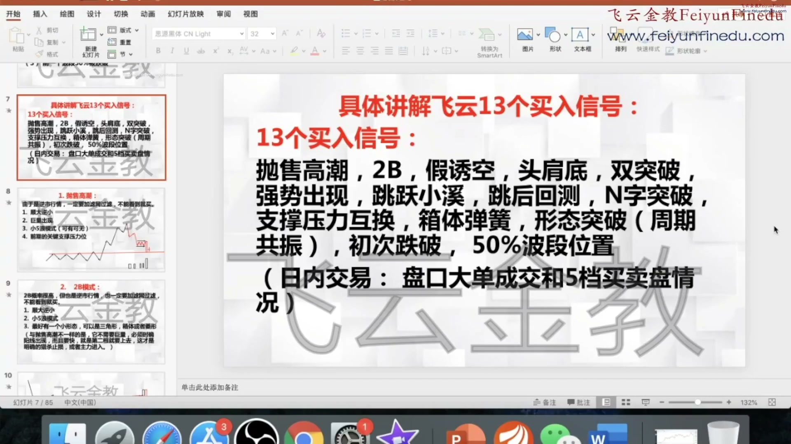
我们这边总结了13个买入信号啊 13个买入信号啊 这13个买入信号呢 我们就一个一个的讲 有的它的概率是很高的 有的不是特别的高 但是呢 这就是我们认为啊 我们认为最 总之我们这试验的心血啊 最好的一些方法 好我们再给解释一下 我们这边有个水印呢 实在不好意思 因为大家都是付费会员嘛 我们也不希望我们的东西流出去啊 我们这边有个水印 可能影响观感 但是没关系啊 只要大家能够听懂啊 能够听懂 把事情搞明白 这是最重要的啊 好我们来一个来看 第一个就是抛售高潮 抛售高潮啊 请大家一定要注意啊 这个非常的少 而且呢 它关键就是在 必须要符合条件 不是每一个抛售高潮 大家都要去做的 每一个巨量都是做的 而是要符合
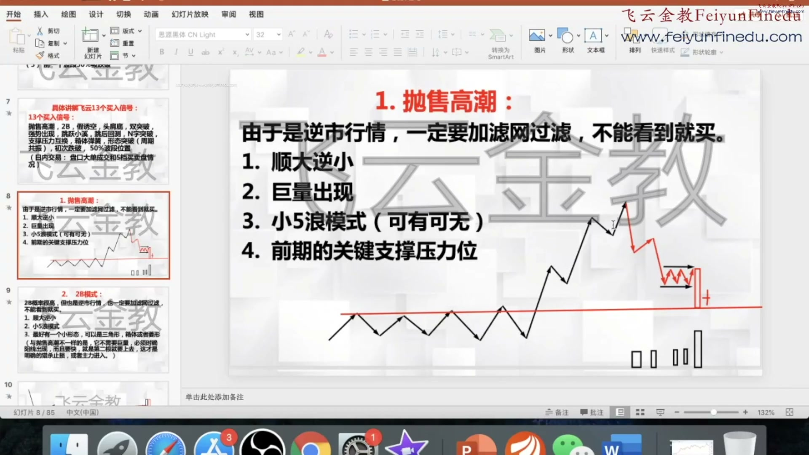
就一定要在一个上升趋势的回调里面 遇到这种抛售高潮 第二巨量出现 量力一定要大 第三最好有一个小五辣模式 当然不一定有 但是最好有小三辣模式也好 但是绝对不可以是刚 比如说跌破颈线 刚跌破 但你绝对不要去买 第四前期的关键支撑压力位 如果符合这么多条件 你遇到一个这样子的 比如说你看 本来就是个上涨趋势 现在开始回调 有一个小五浪模式 小三浪模式 又遇到一个暴跌 这个时候 那你要考虑 可能准备做了 准备做了 如果你冒险的话 你可以在这做一下 下面设止损 下面设止损 好我们来看一个案例 我们来看看这个股票 我们这边有一只 当然这种情况非常非常少 非常罕见 我只是简单介绍一次就行了 好这是一个上升趋势 在一个上升趋势的过程中间
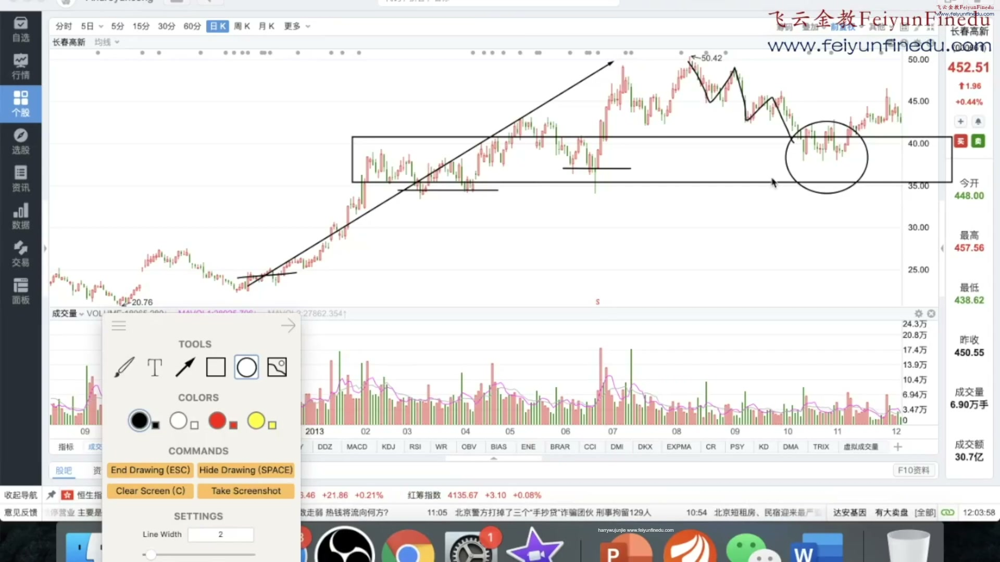
好又回到前期的 关键的支撑压力区域 是不是 那么符合两个条件 第一个顺势 第二个前期的关键支撑 然后呢 比如然后它也开始往下跌了 12345 说到第二阵就有个类似的五浪模型 同时它跌到这个我们可以交易的区间 那么交易区间出来了 你看趋势向上 交易区间画出来了 我们找信号 我们的信号有没有一个信号呢 我们这边有一个你看巨量出来了 一个巨量 我们就认为它是一个抛售高潮出现了 好这个地方就是我们的一个抛售高潮的案例 好这边呢我想给大家说一下啊 就是这种情况 其实在一分钟五分钟的日内交易里面
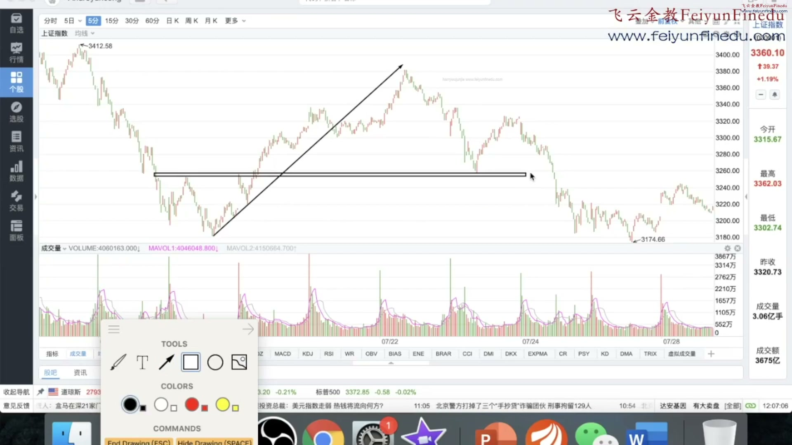
比如说我们能不能找到一个股指的这种案例啊 短时间的案例 好我们来做啊 我们来看啊 这是一个上证指数的股指期货啊 我们说如果是股指的话 这个量可能有点不太对头啊 但是也没关系 咱们就是做个案例啊 你大家可以看到 比如这一波左边它是上升的 是五分钟行情 那么我们如果按照左边是一个趋势来做 那么我们就画出我们的交易区间 我们交易区间在哪 在这个区间是不是 这个区间就是它的一个支撑压力的一个区间 好 因为这是第一个我们交易区间画出来了 当然我们也可以把它二分之一线的这个交易区间画出来 如果是二分之一线的区间 就会再往上提一点 如果是二分之一线的交易区间 大概就是这个区间 然后呢 所以我们可以有两个区间 一个是往下这个支撑压力的 一个是二分之一上面的区间 两个区间画出来 到这个区间 那么我们就等待
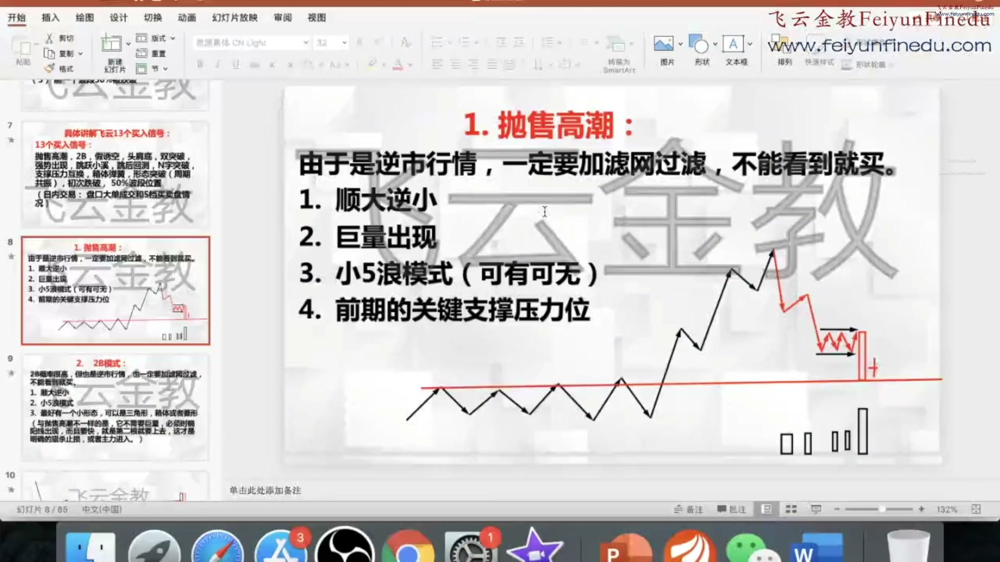
那么如果你是仅凭这个巨量来判断的话 那么第一个在这买了 那你可能会出错 然后第二个又出现一个巨量 就在这 那么第二次买 你就正确了 所以说呢 我们认为巨量这个我个人 不是特别的推荐 但是呢 我觉得还是有点参考价值啊 大家可以去学习一下 就是在这个位置 大家提高警惕啊 因为这个位置还是一个 但是呢我们还是要把它提出来 第一个你遇到这种情况 你可以注意了准备要买入了 好这是第一个抛售高潮 第二个就是我们的2B模式 2B模式我们前面非常详细的讲过 大家可以去看我们的策略类企 非常详细举了很多案例 2B模式是概率最高的一个模式 但是呢它也是逆势行情 所以呢我们也要加上上面的这些滤网
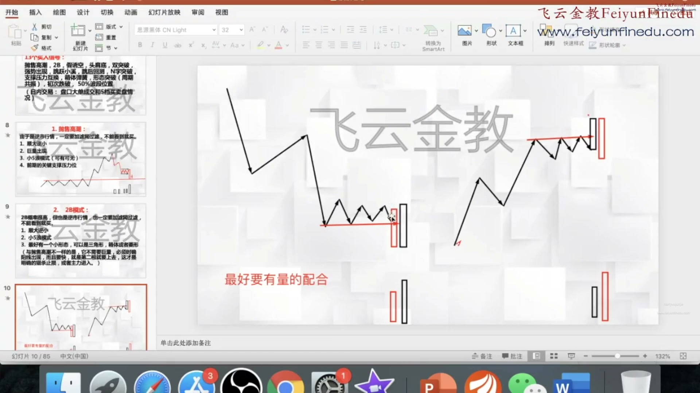
那么它的区别在哪呢 它与抛售高超不一样 它不需要巨量 但是必须要明确的阳线出现 而且要快 就第一根阴线打下去 第二根阳线马上上去 因为这个才表示是明确的 猎杀止损 或者阻力进入 好 我们来看一看 我们再来看看 有没有2B的一个模型的例子 下面呢 就跟大家讲过了 你看12345浪下来 一个小平台 第一根k线暴跌 第二根k线马上拉起来 好那比如这个也是啊 往上涨啊 当然就后面再讲啊 也是第一根k线上去 第二根马上打下来啊 最好有量的配合 就算没有量的配合 其实也无所谓 左边不一定是巨量 但是右边往上拉的 最好要有量啊 最好要有量 因为只有有量 才能够明确的表示 你是在做一个 是吗 在做一个 猎杀止损 或者是趋势改变
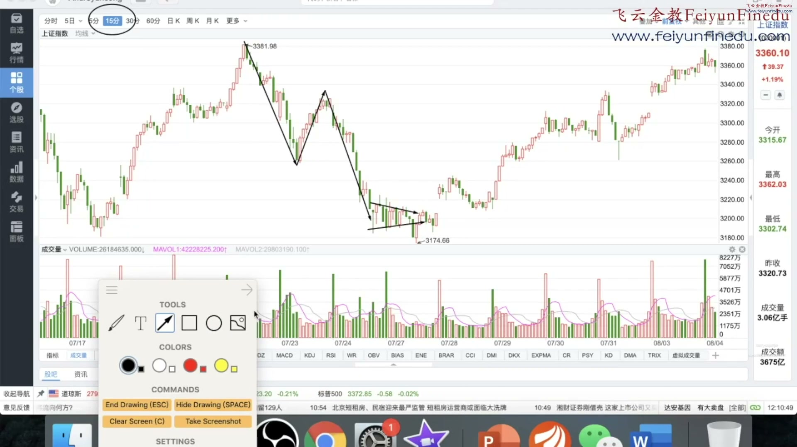
15分钟有些时候是2B 5分钟不一定 30分钟是2B 60分钟就不一定 所以首先你要确定你要做的周期 你平时喜欢做哪个周期 就在这个周期里面找2B 不要换周期 你周期换来换去 它根本就没有了 比如这个15分钟就是一个2B 大家看是不是 往下跌 一二三 小平台 是不是小平台 小平台跌完 请大家一定要注意看 第一根K线阴线打下去 是不是第二根马上拿起来 马上拿起来 根本就没有停留 那么你看后面这一波涨的 是吧 所以说2B是个概率非常高的 但是呢 不多见 因为它这个关键是要马上拿起来 就如果没有马上拿起来 不是说我们不做啊
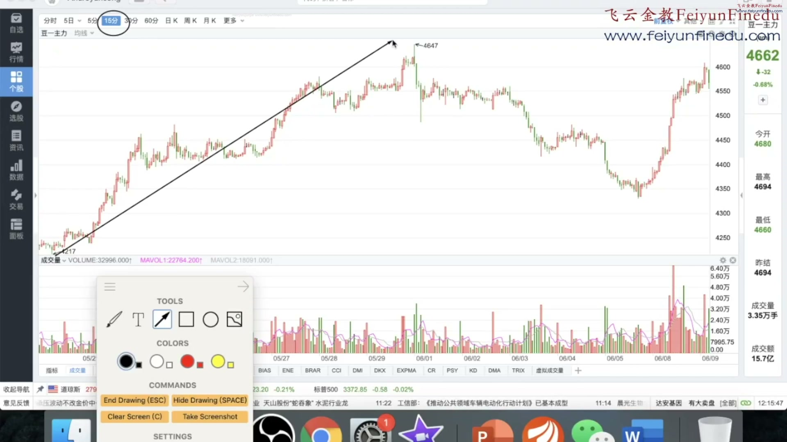
就整个做 只是说呢 它的概率比较高 但是就是因为概率比较高 人家很少出现啊 所以大家一定要注意 你不能说啊 你就没有2B就不做了 只不过你衡量一下风险 2B是最概率最高的 好 这是一个上升指数 我们再找个上品期货啊 好 我这边给大家找到一个 这个是豆子 我们斗一它的15分钟级别的 15分钟级别 大家可以看从这到这 是不是个上升趋势 好上升趋势的回调 它不是绝对人意识 上升趋势的回调 好在上升趋势的回调里面 它大概从这开始跌的时候 有没有一个类似的五浪模型 也有你看跌到这 这个地方有个小平台 大家看到小平台出现 小平台出现这个位置 好我先给大家放大 因为刚才我想给大家看大趋势 我们现在看从更微小的给大家放大看
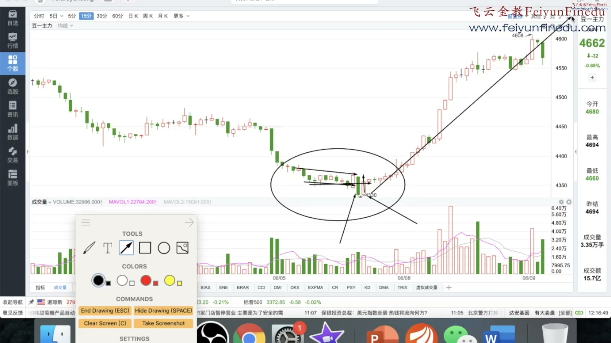
有没有有小平台一根k线跌破 跌破这个小平台的所有的价位 第二根15分钟k线马上起来 看到没有又突破前面的这些 它前面跌破的点 看到没有就是这么一回事 所以说每次它如果符合顺大逆小 符合一个小的五浪模型 符合一个小平台 跌破马上拉起 快速拉起 那么就是我们的标准2B 你看后面这一波是不是长得很好 只要说这一波让你短线 就是赚这个15分钟的钱 是吧 这后面它跌下去了 就是怎么样 不管总之这一波短线的钱 你是赚到了 所以这就是我们2B 好我们2B就不详细讲了 大家可以再继续看我们 以前其他的一些节目 我们再来讲第三个模式 叫假又空模式 其实2B也是假又空模式的一种
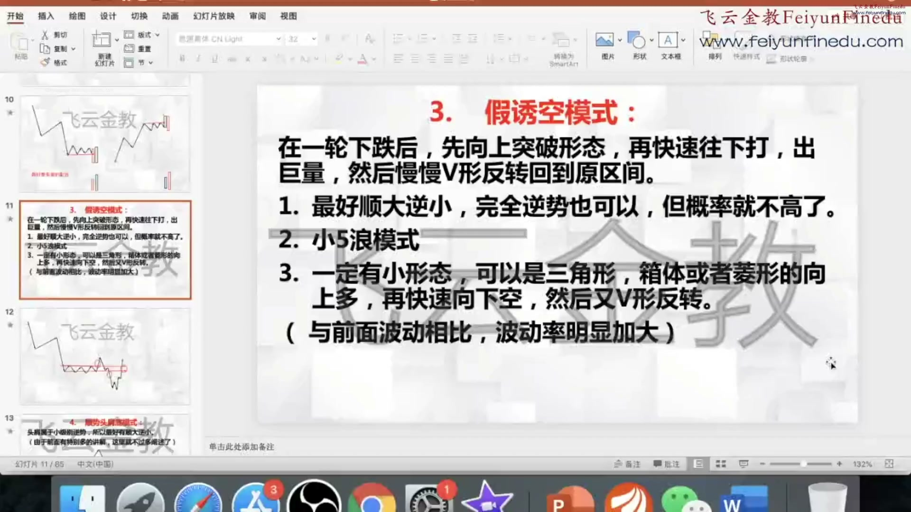
先向上突破形态 再快速往下打 打出来一个巨量 然后V型反转又回到圆区间 好第一个 这种假又空模式 第一个最好是也是顺大逆小 完全逆势 其实有时候也可以 但是概率就不那么高了 第二最好也有小舞蹈模式 因为这样才算跌透的 有一个小舞蹈模式就跌透了 第三一定要有一个小形态 可以是三角形 可以是箱体 可以是菱形 而且要往上打 然后再快速往下空 然后又微型反转 那么这个什么意思呢 这个就是和前面几个有什么区别呢 就是波动率明显加大 好这边下面给大家举个例子 大家看啊 跌跌跌 一个小平台往上一打 快速往下打打打 打得很快很猛 打完了 又往上走个微型反转
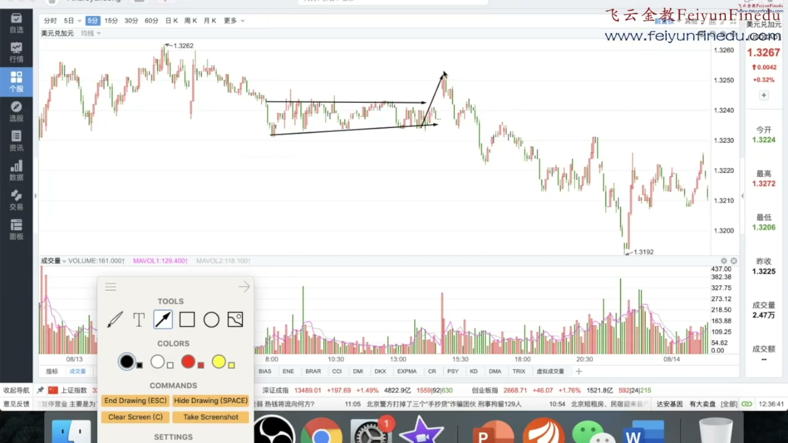
这样子就是先吃掉那些做多的 啪的一下又吃掉些做空的 两边给打蒙了 行情就上去了 我们现在举个例子 好 大家看这个美元对加元 最近五分钟就出现了这么一个经典的假又空模式 你看和前面相比 你看它这个是怎么是假又空的 前面也有这种模式 什么模式呢 就是一个区间先往上跌 然后快速往下跌破 但是它跌破之后 它就没有拉上去了 它没有回到这个区间 所以它不是假的 它是真的 而这个大家可以看到 先是一个区间是不是 往上走 走了之后快速 你看打多快 它的一个波动率明显加大 但是快速打下去之后 又快速打回来 看到没有 快速打回来之后 它就在这个区间
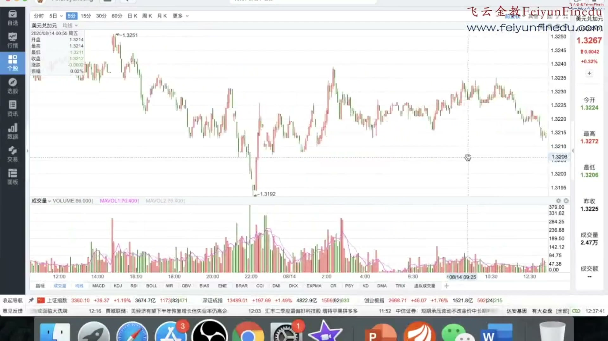
这个就是一个标准的假又空模式 在这个假又空模式的情况下 你再来配合我们的 比如说双突破 大家可以看 我们的双突破 这个地方 在这个地方进行买入 或者是你不等到我们双突破 你在这儿进行买入 都是非常好的一些买点 非常高概率去买点 是不是 你看买入之后 虽然后面它没有怎么暴涨 但是只好说 一直以来还是在上涨 是不是 这只是一个例子 我们还有一些将来会遇到这种情况 将来会遇到这种情况 特别是短线里面特别多 大家看这个地方是不是也有个假有空模式 就是类似的假有空模式 大家看 当在这个区间 是不是 这个区间 那么我先往上打 打成快速往下跌 快速跌 而且是跌破前面这个平台
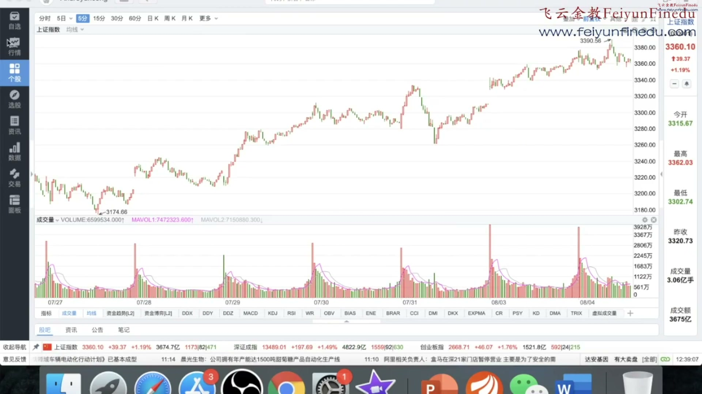
因为它如果真的向下的话 它再走一个N字平衡是不是 但是没有 它跌下去之后 又快速的回到了 原来的这个区间之内 那么这就是一种假又空模式 相当于说 它是一个假又空 所以这些模式呢 有这些模式不太好找 但是你现在知道 哦有这么一些东西啊 你以后遇到了 哦你又知道 这都是一些交易小技巧 我们再看看能不能找到啊 不能找到就算了 我们再看看有没有 能不能找到一些其他的 类似的东西 好我们再来看 这是一个股票 那么我们就等于说 从外汇 我们从股指 我们从股票 都能够找到这种模式 你看大家看 这个股票有这种模式 它整个还是上升趋势 是不是 它的上升趋势的过程中间 在这么一个形态 他先进行突破 突破完了 就是快速的打
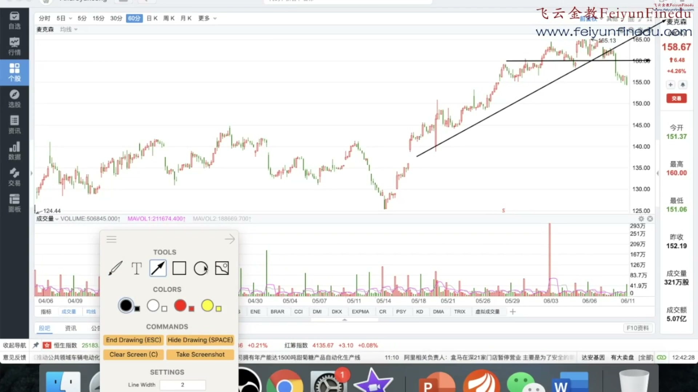
而且上去之后 又快速的回到了他这个空间 你看是不是 回到这个空间之后 他在这进行可能进行盘整 又可能就是像这样子 直接跳空高开 你看他把这个假动作做完 你看他后面 一路就是开始上涨 至少说涨到这一波行情 如果用我们的交易方法 你看多简单 趋势线一划 形态一突破 走人 是吧 你这一波至少又能赚到 你在这个地方 他说假动作 你能够把它识别 一个假又空 那么你在这做一笔 然后到这你就出来了 其实假又空 关键是慢慢大家就学会快 他要搞假动作 他不会在这折腾 他不会在这盘盘盘盘盘盘下来 不是 他就是这样子 啪啪啪啪啪啪 直接往下打 打的让你就是怀疑人生 刚才我们这个欧元和加拿大元
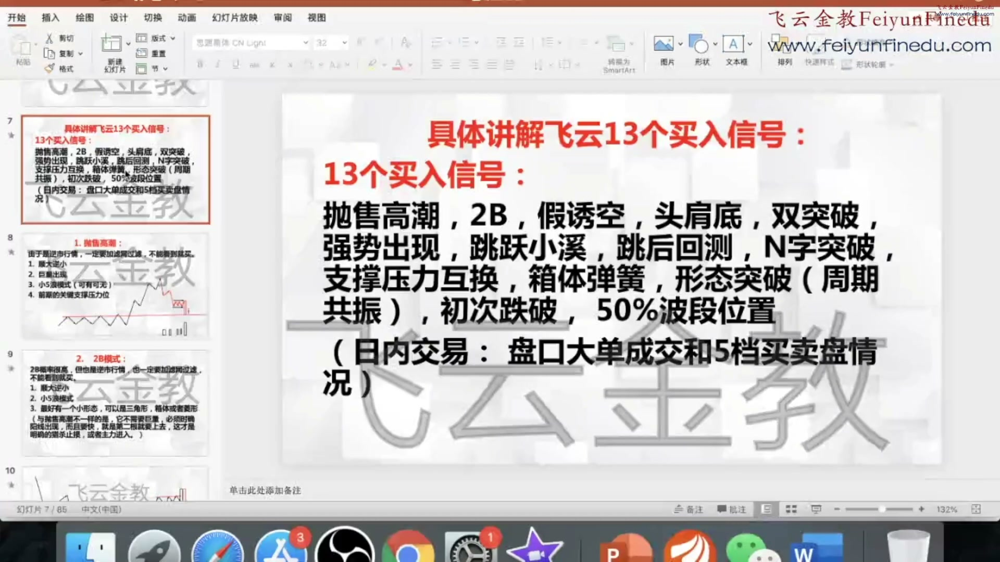
啊就是这样子啊 所以他们就是一个标准的 又空的一种 大家还可以慢慢去找啊 我们这边呢 就是给大家做一个提纲协定式的讲解 我们就不给大家再找了啊 好这就是我们看到的前面的三种模式啊 我们三种模式我们再总结一下 就是抛售高潮 这个是最不保险的啊 概率没那么高啊 大家一定要小心啊 只是说遇到抛售高潮 大家小心 就是要注意了 看看有没有2B 有没有二次回测 有没有假又空 好抛售高潮 然后2B模式是概率最大的 假又空模式也是概率很大的 这个假又空其实就是我们其他的一些 就是一些优秀交易员 就是一些美国优秀交易员 澳大利亚他们的presensing中间的fake模式 也是假动作模式 好这三种模式 我们就基本上讲完了
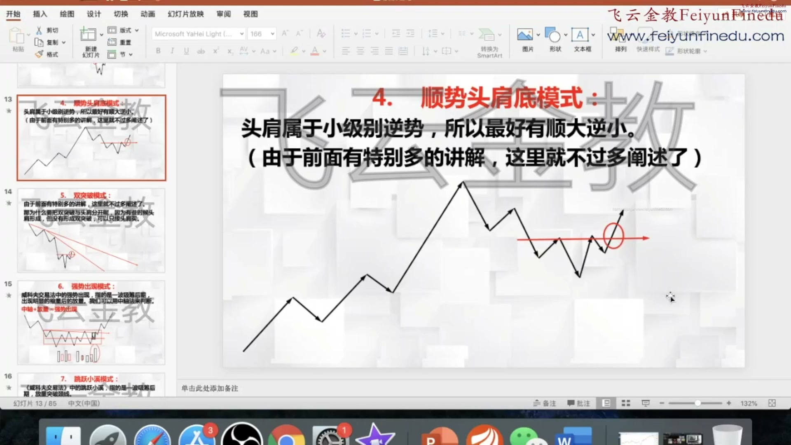
我们现在来开始讲后面的一些高概率的买点 在每一期节目前 我先跟大家说一下 就是为了避免我们这个被快速的截屏 或者是流传出去 所以我们加了一个水印 可能会对你的观感有一定的影响 但是没关系 是吧 这个是保护大家的利益 你们也不想付费的这个会被快速流出去 是吧 好 所以请大家理解 好 我们来看看顺势头肩 当然顺势头肩我们前面讲的非常的详细 那么多的案例 那么多的详细讲解我们就不多说了 关键呢就是我就发现一个问题 很多的朋友都喜欢做逆势头肩 什么是逆势头肩呢 就是说它就是一波大的这个行情 在暴跌跌跌跌跌一直在跌 一直在跌一直在跌是吧 那么逆势最后出了一个头肩 然后就是这样子 然后呢那个朋友过来说
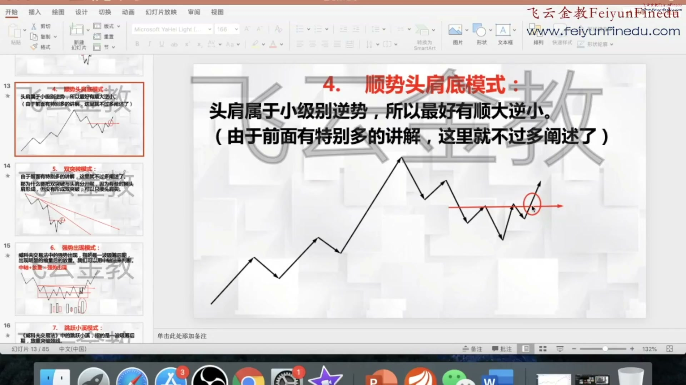
就是顺大逆小找头肩 概率相当高 你要去找这个逆势头肩 也不是说不高 你就要准备这个逆势 它可能会被打回来 大家明白吗 所以说一定要注意找顺势头肩 当然顺势头肩 你就必须要顺大逆小 什么意思呢 比如现在你们看到 这个是日线级别的 那么我这个日线找不到 我可能从60分钟找头肩 那如果你是做短线 60分钟级别的K线向上 那么你找头肩 可能从5分钟去找头肩 大家明白了吗 你始终顺大逆小找头肩 你就能赚钱 你就只不过就是有和没有的问题 好 所以我们这边就给大家也不多说了 我们就看看能不能再找到一个 顺大逆小头肩的例子 好 我们给大家举这个股票的例子 这个股票大家可以看
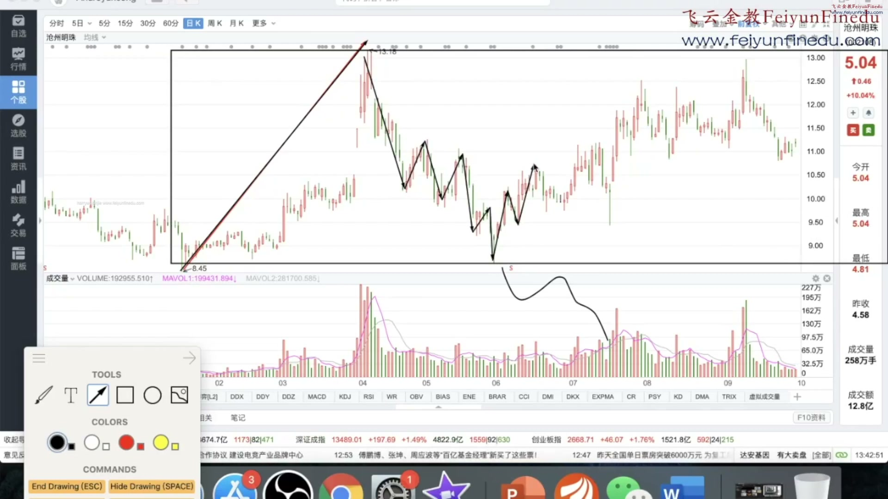
为什么我判断它不是个下降趋势呢 因为我把它看这个大的箱体 它这个大的箱体 它只要没有被跌破 我仍然认为它还是在盘整啊 好 那么它在盘整的过程中间 大家有没有看到 它这边有一个非常明显的头肩呢 如果大家可以注意到 你看下来再上去 再下来再上去 这个地方有一个非常明显的 这么一个头肩形态 是不是 这个头肩形态的颈线是非常难画的 它的颈线实际上就这么画 那么它们颈线突破 你要等它颈线突破 其实已经比较高了 那么你等它的这个 这个突破 那么实际上 它颈线和这个双突破的时候 是这个点 当然你做第一次 可能会被止损 那么你第二次 你在做的时候 那你可能就会有引力 好 那么这种
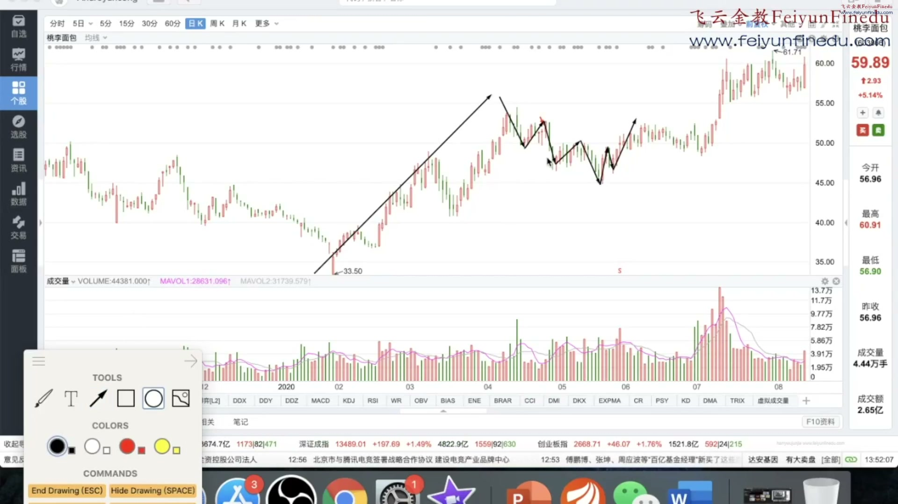
你基本上这一波行情 你应该能够往上赚到 但它后面有一个很巨的下跌啊 股票里面呢 日线级别的头肩 其实真的不多啊 真的不多 其实60分钟啊 那些比较多一点 所以比如说举个例子 大家看到这个 首先它的大势是什么 上涨的嘛 在上涨的过程中间开始回调 回调大家可以看到 那么这个地方是不是一个头肩 这是左肩 头部右肩 什么时候突破颈线 在这个时候突破的颈线是不是 那么突破之后你看后面是不是 虽然有一个回调 但是最后还是上去了 因为你的股票止损可以设大一点 你设在这儿是吧 因为股票又不是期货 又不会被爆仓 那么你设在这儿 这路上去是不是就赚钱了 所以顺这就是顺大 一小找头肩
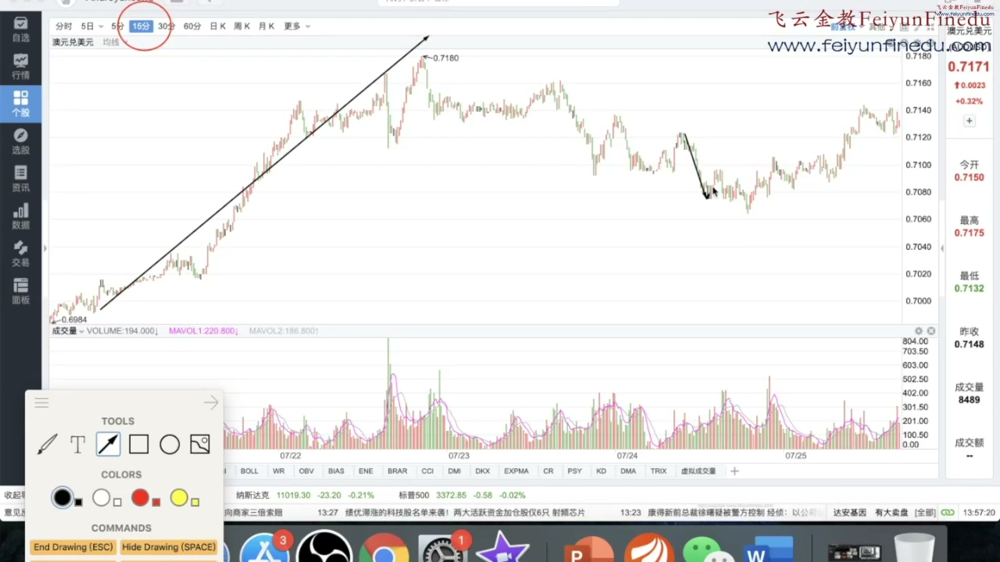
但是它一完完全全可以在这做个相提吧 震荡很长时间 最后又怎么样 又下来 完全可以的啊 好我们看看能不能再在30分钟60分钟 给大家找一个头肩啊 我们找一个外汇 好我们现在给大家看一个外汇的15分钟啊 外汇的15分钟在这儿 大家可以看到 首先请问什么趋势上涨吗 肯定是大的上涨趋势 现在做逆势回调 是不是 回调了之后 再回调到这 看大家可以看到你看 下去回车 回来再上来再上来再上来 再上来再上来 好大家可以明显的看到在哪 在这个位置 是不是做了一个非常标准的头肩 小规模的头肩 这是左肩嘛复合型左肩 头部右肩 那么突破你就在这进行一个买入 买入之后 你把止损设在这 你看止损设在这
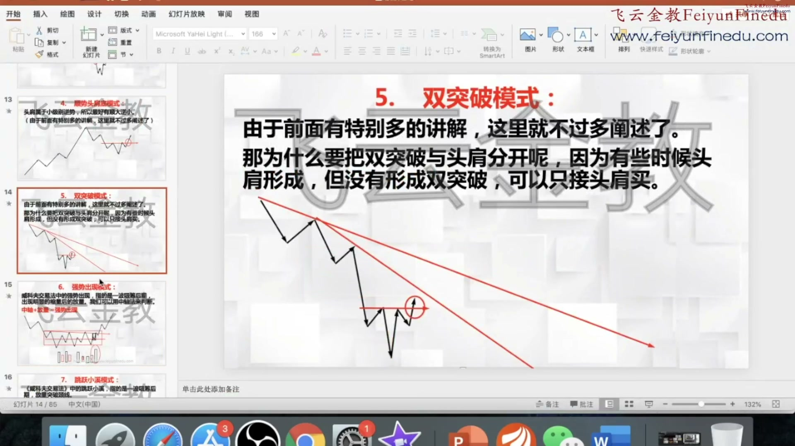
但是从这到这 你这一波行情至少你可以赚到 是不是外汇这一波行情 你在这进行一个开仓 这设一个止损 在这出来 那这波行情可以赚到 它只要是顺大逆小 有这种头肩就可以了 当然后面头肩可以通过我们的双突破 进行配合 好这就是我们头肩 前面讲了很多了 好我们再看一下 这个我们的双突破 当然双突破 这个我们前面 也是讲了特别的多 非常详细的讲 我们不过多阐述 我们为什么要把 头肩和双突破分开呢 因为就是说 有些时候 比如这个地方 它有头肩 它还没有突破 是不是 比如这个图形 它有头肩了 你可以按照头肩来买 也不是一定要 拿到双突破才买 如果头肩和双突破 正好完美的结合 那当然最好不过了
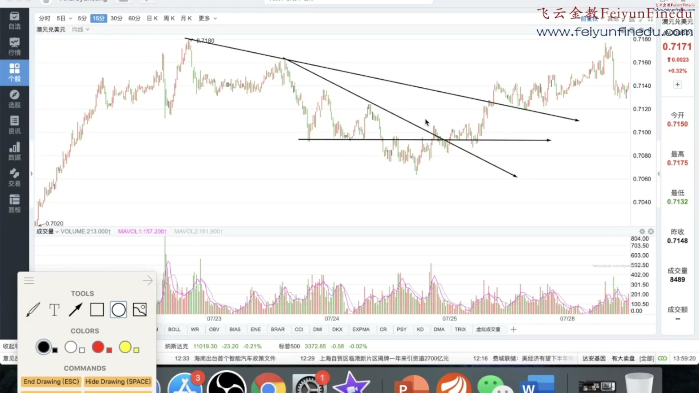
这个其他的一些信号啊 那么你就双突破还没有出来 是吧 有些时候它们是完美的重合的 好 我们再来看看一些双突破的例子啊 我们就只举两个例子就可以了 好 我们就拿刚才的这个例子来说啊 你看 你这个 刚才的例子 你双突破的点在哪 就是在这个地方 双突破的点和头肩的这个突破的点 是不是就完美的重合了 完美的重合了呀 是不是完美的重合了 因为它这个位置既是突破 既是突破下降趋势线 又是突破我们的头肩形态 同时还是突破支撑为压力互换的位置 当然非常的好了 只不过它突破就回来了 但是所以止损你不要设的太低 因为外汇嘛 它的波动很剧烈
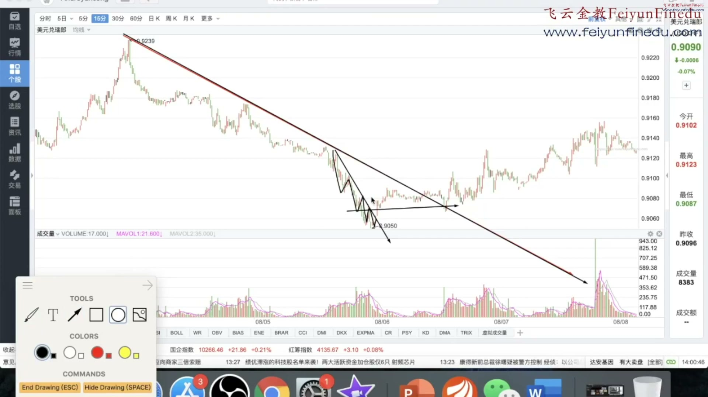
好我们再找一个其他的一个情况 其他的一个品种 好我们就举这个例子 这个例子也比较好 大家可以看到我们把趋势线一画 那么我们第一个做的 我们可能会 如果你不想做这么大 我们可以从更小的周期来做 大家可以看到更小的周期 更小的趋势线 这个地方突破 突破做不做还不做 一直等到什么时候 等到这个位置 这个位置是不是该你做了 为什么该你做 它既是下降趋势线突破 它又是这个形态的 这个W状的这个地方突破 那我们去做 把止损设在这 那你看 那么你第二个加仓点在哪 第二个加仓点应该在这 是不是 在这个位置 为什么在这个位置 因为它又是符合趋势线突破 同时下面的一个形态突破 也是我们的一个双突破位置 当然它后面盘整 你把止损设在这
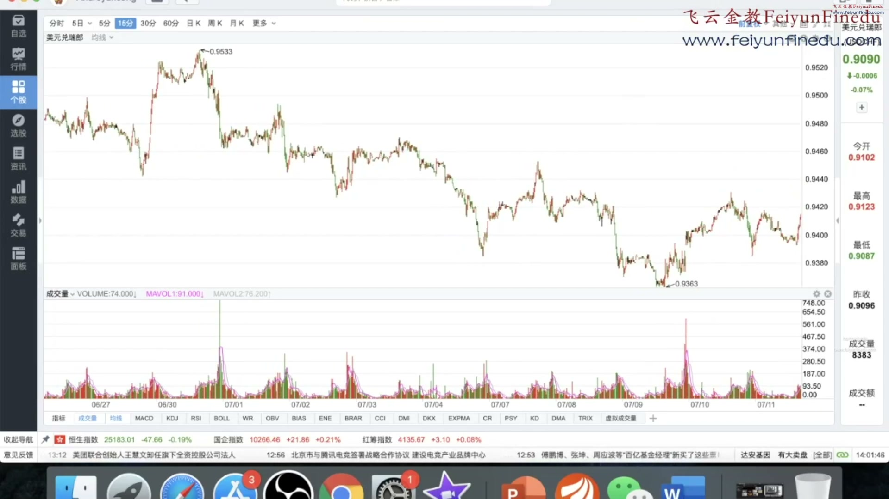
因为它是一个逆势的嘛 所以说我们说你做逆势的 你看这一波是逆势的 你赚的钱的可能性 没那么快了 没那么多了 但是呢 只要即使是逆势的 我们用的双突破 还是能够一波一波的赚钱 是不是 还是能够一波一波的赚钱 好 比如说我们这一波的这个 这一波的这个逆势 我们一直不做 一直不做我们假设 好我们一直不做 一直到什么地方做呢 我们非要做一个逆势衰竭性的双突破 我们因为它现在没有顺势 好趋势线 趋势线 形态 前面支撑和压力的关键位 那你就知道了 在哪做 在这做 为什么在这做 因为它既突破了趋势线 又突破了一个标准的底部形态 是不是 那么在这做 做完了之后用我们的双跌破去质疑
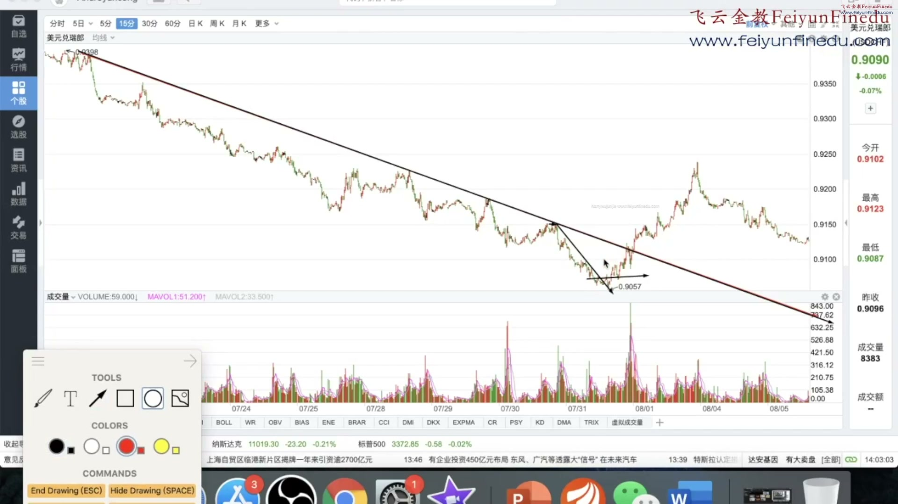
后面你看这波顺势行情 如果你能够做准的 那么后面赚的钱就更多了是不是 好大家看每一波双突破 只要你去做 即使是行情 整个的大的行情 你做错了 看错了 有一个大的方向 你看在这儿是吧 趋势线突破 我们先从更小的周期 从这开始趋势线突破 趋势线突破还不错 形态突破在哪突破的 形态在这突破的 你看是不是 形态突破 我们这个是很小周期 15分钟 15分钟形态突破 止损的事儿 你看你是不是 这整整的一波 这钱一直做到哪 做到趋势线跌破 是吧 你这一波钱 是不是赚到了 即使你是在 没有做成这一步 只要你严格的 那个方式操作 真的是没有什么问题 赚钱不是问题 关键是要等到 耐心等到这个地方 你看这是一个顺 逆势的 我们找一个顺势的
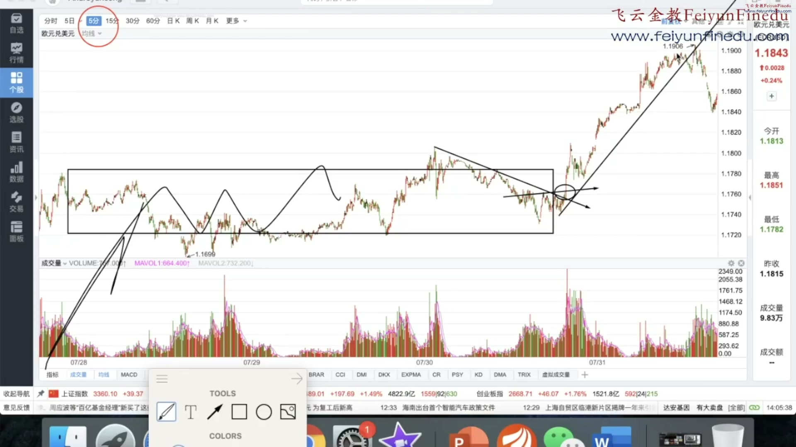
上涨的上涨的 所以呢 你看只要是上涨 我们在这个顺势的行情里面 找一个双突破点啊 这个地方出来 你看这一波后面是不是涨得非常大啊 为什么涨得非常大 就是因为它是一个顺势的 这一波是个相提 但是呢 左边这个地方是个上涨行情 所以只要是顺势的 我们开仓位置对了 那么就能够赚一大股啊 好我们就不多说了 这就是我们的双突破系统 以及我们刚才讲过的头肩形态 我们再来讲一个 大家可以看到 其实我们是按照顺序来的 基本上先是 先是这个我们的抛手高潮 然后二次测试 二次测试完了之后呢 它可能会形成2B 它也有可能会形成 我们刚才讲的假突破 它也有可能会形成双突破 这是一波一波的来的 当然它有些时候 不行的双突破 它就走一个相提
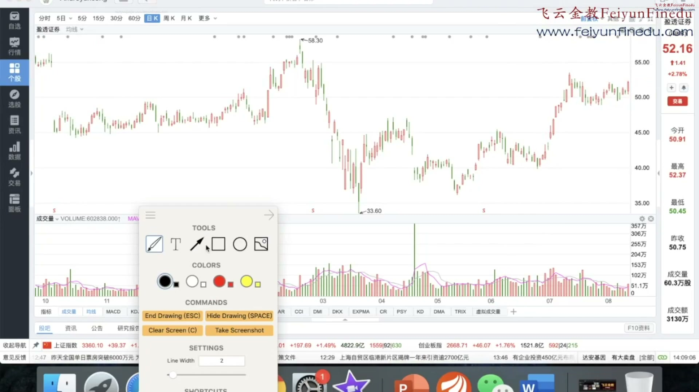
出现明显的缩量后的放量 我们可以用中轴法来判断 中轴加放量就等于强势出现 有下面这幅图 在最后要拉伸之前 突然进行放量 而且在中轴之上 那么就是强势出现 好我们来看强势出现的买点 这个主要是股票 我们找一找股票 好我们举这个例子 这是一个美国的股票 我们举一个美国的 举一个中国的 我们大家可以看到 它这个你就没有办法用 什么双突破 你可以用双突破 比如这个地方你可以用双突破 突破完了 在这个地方买一个 但是它又回调完了 回调完了之后 那么这个双突破 可能在这就走了 是不是 好 它就回来开始怎么办 就走一个箱体 在这走一个箱体 那么走一个箱体 我们在哪买呢 第一个 涨到箱体的中轴 箱体的中轴找到了 好 箱体的中轴找到之后 我们就看 这一波它什么时候出现一个放巨量
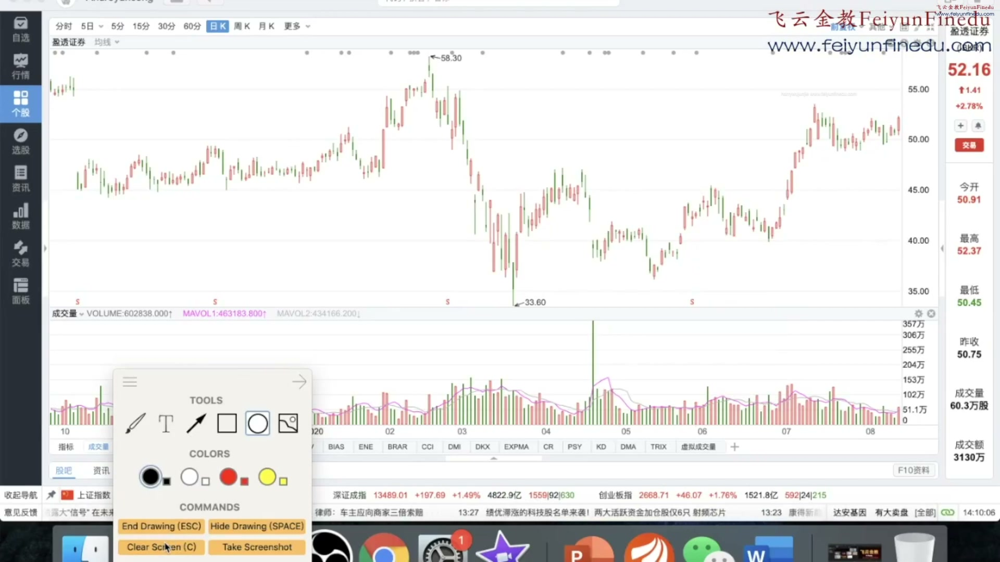
就是这一天巨量又放出来 然后又在这个中轴之上 然后第二天好像又是放了一个巨量 在中轴之上 这个位置对不对 反正没关系 大概是这个位置吧 就算这吧 那么这两个就是我们的强势出现 又在中轴之上 又在一个盘整期吸筹完毕 那么我们就可以买 它的关键就是放巨量 活不中轴 好这是一个例子 我们再来看另外一个例子 因为微科夫的这一套方法 强势出现是在跳跃小息之前 有些时候跳跃小息买了就回调 你会觉得很不爽 这个价格很不高 那么因为我们的强势出现 是在跳跃小息之前 所以我们先把强势出现 有些时候也是个很好的买点 就避免了你跳越小区 跳了就回调 这种尴尬的境界 我们可以看到这个股票
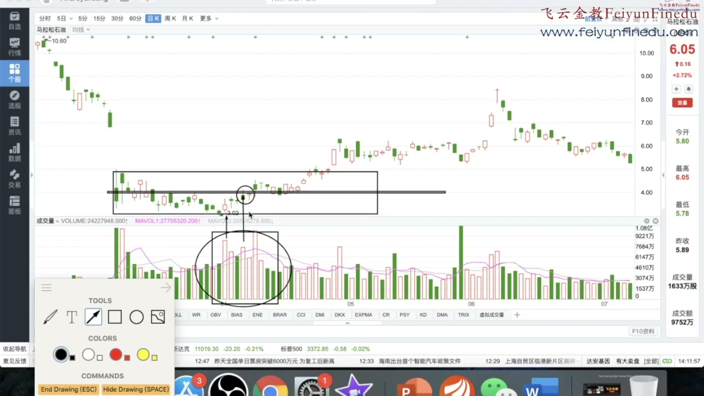
我们找到箱体的中轴 找到之后 我们看什么时候 它的量放的比较大 我们还是能够看得出来 这段时间量是不是放的比较大 很明显 这时候放量放的比较大 它底部放量还敢不敢买 我个人认为暂时不要买 因为底部放量 你不知道它到底是真量假量 但是只要是在中轴之上的放量 比如这个线 当然我们画的到时候 是不是中轴肿瘤 中轴之上的放量 只要是中轴之上的放量 其实都是可以买的 大家可以看到 所以这些点位都是买点 你买完了之后 你止损是在下面 你看后面这一波 是不是就整个的拉伸上去了 是吧 好你跳跃小溪之后 你再去加仓都可以 好这是美国的股票 我们再举你中国的股票 好我们来看一个中国的一个股票例子 那大家看如果这个股票 我们把它视为下面是一个吸筹区
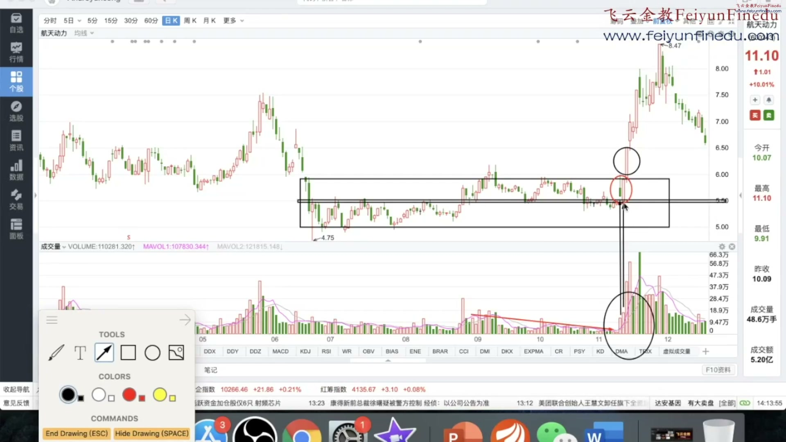
但是实际上它只要它的中轴之上 用我们的办法 用我们的强势出现中轴法来判断 你看它只要是中轴之上 而且放量 它实际上这个地方就可以买了 是不是 你看这一段时间是明显的缩量 它开始放量的中轴之上放量的时候 就是在这个时候就已经是中轴 这个时候就已经是中轴之上的一个放量了 后面又来了一个中轴之上的放量 就可以先买了 不要着急 先不要怕 先买了之后 在下面设一个止损 后面跳位小心 你再去加仓 后面再来加仓都可以 这样子就可以让你早买 早买的好一点 我们再来随便看一个股票 好我们来看这个股票 我们假设 在它被拉伸之前 拉伸之前 它这个可以把它看作一个 在这个箱体里面的一个震荡 是不是
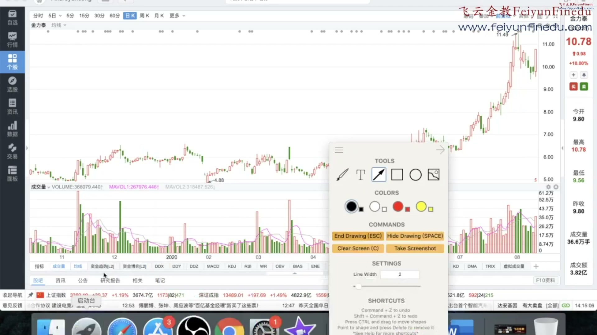
它只要是在中轴之上的放量 那我们就去买啊 中轴之上的放量 你看这一天就放量了 是不是量明显出来了 那么你就会买的好一点 是不是 好 这就是我们一个很好的办法 就是强势出现的办法 就是这个例子 如果是股票啊 外汇啊 或者是一些比特币啊 大家也都是用这个办法 我这边这就不多说了 我们就不举这个例子了 我们后面我们就会用 比特币和外汇 来不同的品种来进行举例 好的非常感谢大家 这一期我们最后再来总结一下 这期我们讲了顺势头肩 我们前面讲了很多了 双突破我们也讲了特别多 就是强势出现 前面虽然威克福讲了 可能很多朋友现在没有什么印象 也不知道如何判断强势出现 我们现在就明确的告诉大家 中轴一个相提 或者一个倒三角形的中轴
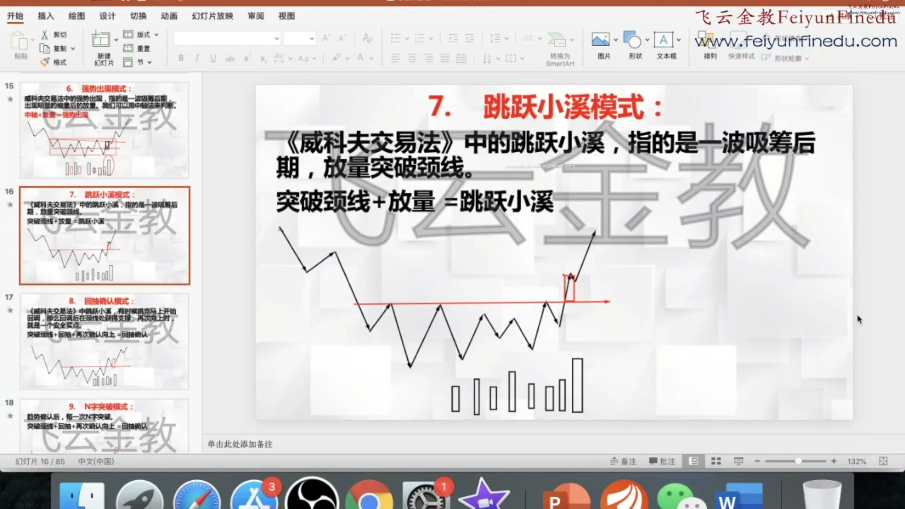
同时出现那就更好 好非常感谢 我们下期再见 好我们现在继续来讲后面几个买入模式 后面几个买入模式呢 他基本上是做反转啊 就是在一个大的形态被突破之后 他来做一些反转啊 越大越好 这个反转之后呢 我们就是按照威克福的 他这个叫做 我们用的这个叫微科夫的术语 叫跳跃小息 跳跃小息是什么呢 在一个巨大的一个形态 一般都是吸筹之后放量突破颈线 那么吸筹是什么标志呢 吸筹的标志 大家可以去看微科夫理论 就是上涨的时候有量下跌缩量 上涨有量下跌缩量 上涨有量下跌缩量 一直到末期量越来越少 突然放量 我们前面也专门讲了这个强势出现
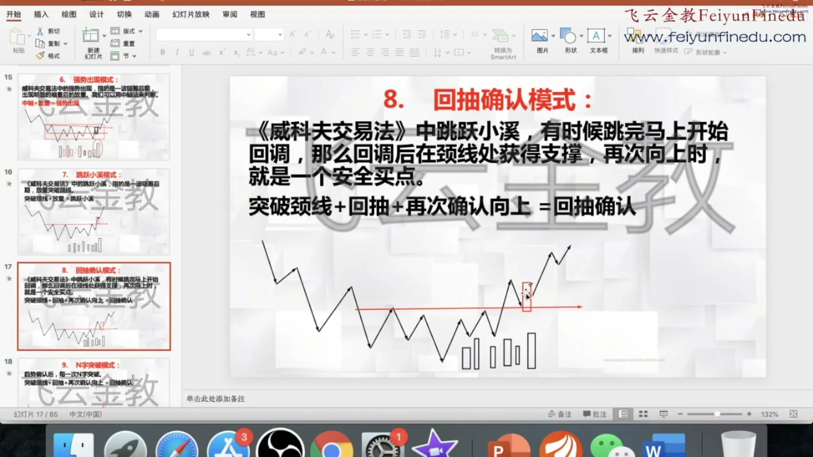
也可以在跳跃小息出现买 后面买的这一根突破买 当然它可能会回抽 所以我们这三个连在一起讲 跳跃小息就是突破颈线加方量 就是跳跃小息 那么回抽确认 它跳完很多时候会有个回抽确认 回抽确认完毕再往上 所以跳跃小息 跳完之后回抽 突破底线回抽 再次确认往上的一根阳线 当然最好只有亮 没亮的话是有点危险 因为没亮的话 它很有可能突破之后 搞个假突就下来了 而且打得很猛 大家也看到 特别是在一个行情的末期的时候 它会这么走 它会走一个 就是类似的打得特别猛 所以在这个位置 如果你不止损的话 你们看到前面不是有几个 我们的叫做掉空陷阱吗 如果你一旦陷到陷阱里面去
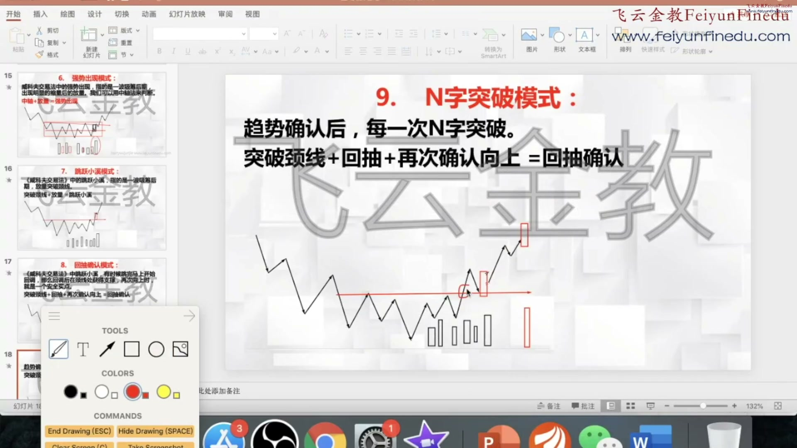
所以大家一定要注意这种点位 一定要坚定止损 错了就止损 好这是第一个 就是我们第一个跳一小息模式 第二个就回抽确认模式 当然回抽确认完了 这个就非常好了 为什么呢 因为这个时候才表示趋势真的上去了 你就把它止损放在这很好 然后第三个就是我们的N字突破 N字突破经常发生在回酬确认之后 就说这个点位一上突破 一个回酬马上这个N字突破 它就上去了 而且这一波啊 如果前面的支撑压力比较远 往往这一波走的比较高 走完了才会走形态 大概的就是经常是这么走 我们都要看一看啊 所以呢 在我们这几个里面就是 跳跃小西回酬确认N字突破 它们是连在一起的 我们可以说它完完全全是一个系列 当然有些时候
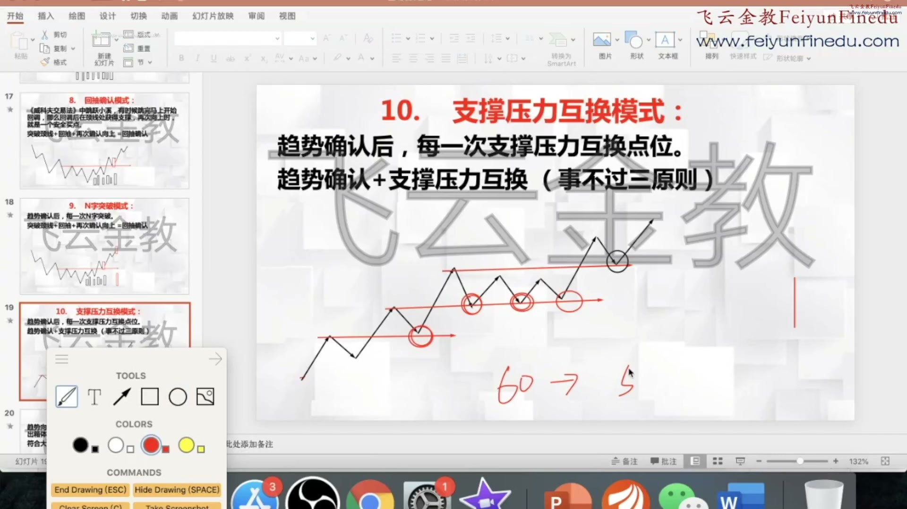
这个时候支撑压力互换模式 就是就像这种 每次我们举个例子 像它这种 每次上去之后 我们就在支撑压力回来的时候 我们去买入一次 回来的时候买入一次 回来的时候买入一次 当然还是最好配合 配合顺大逆小 如果你是一分钟就没办法了 因为你找不到更小的周期了 如果本身这个图形是60分钟 那么你就是在一分钟 五分钟啊 里面去找顺大逆小就可以了 是不是 那么如果这个图形本身就是一分钟 那有可能你用点位买入法 买了之后在下面受止损 它只要是小的周期能够找到形态 你就尽量在这个区间找形态啊 好 这是支撑压力互换的这个模式啊 呃 好 我们 我们这个在里头在当中讲吧 因为这边有个叫事不过三原子 我们再讲 我们先讲这前面的啊 七八九
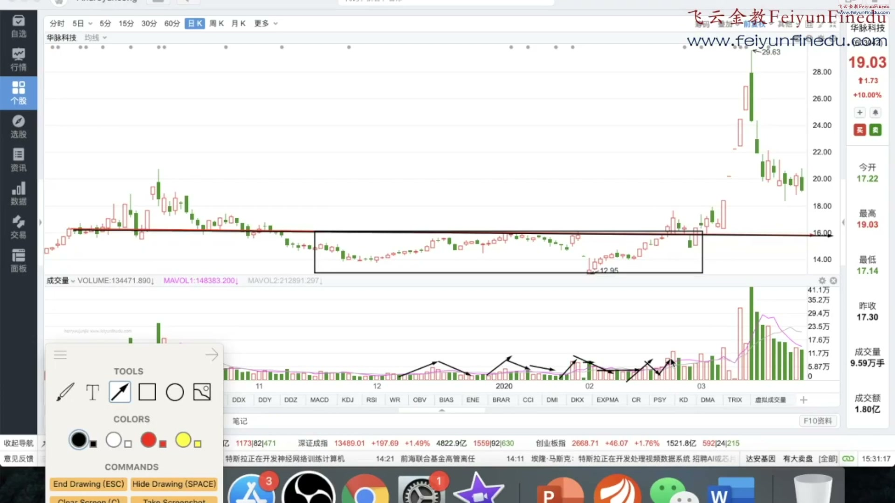
我们大家看到前面的支撑压力互换的位置在这 这是一个非常强的支撑压力互换的位置 那么在这之下 我们可以看成它的再进行一番吸筹是不是 好我们看看吸筹区是不是红多绿少 红多绿少 红多绿少 绿少 红多绿一般 然后这个地方一般 但这个地方有红多绿少 龙多 这是明显在吸筹 是不是 好我们在明显在吸筹 他跳跃小西在哪 在这 但是他跳完马上打回去 打回去 我们一般的先止损再说 止损完了 第二个买点在哪买 他又跳出来了 在哪跳出来 在这跳出来的 第二次跳跃小西 第二次跳跃小西 是不是我们的 跳跃小西 又一个买点 买完之后突破回调 是不是 又是一个买点 第二买点在这 好突破回调完成之后
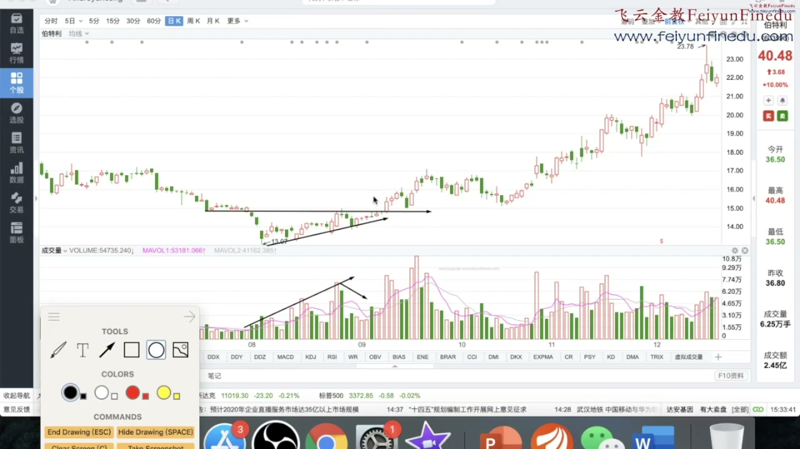
在这实际上 如果还可以 就是第三个买点 那么就是完美的 好 第一个我们是被止损了 从这开始 突破 回抽确认 三一个N字突破 好 这是 这是第一 这是第一个 我们再看其他的 好我们又来 比如说 我们把这个小的 这只股票 这个小的三角形区间 我们如果看成是一个吸筹区 是吧 红多绿少红多绿少 那么第一个买点就是突破 突破跳跃小息 第二个买点是突破回调回抽确认 你看这个时候 他就没有N字突破 是不是 第三个就是N字突破 就是这一点 那么就是相当于是 第一个你错过了 买第二个 第二个错了买第三个 一二三都可以买 当然他最后又开始回调了 不过这一波回调完了之后 你看后面涨得很厉害 股票你可以把止损设远一点
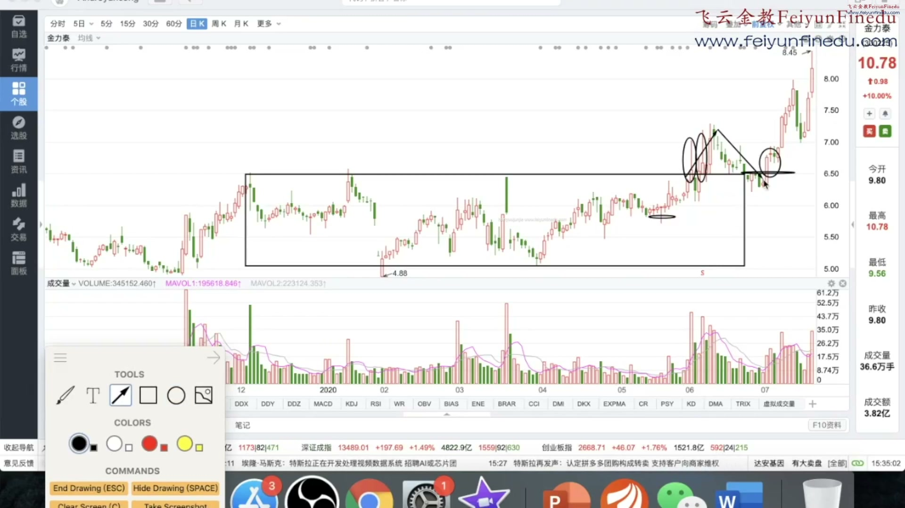
大家看这个股票就更明显了 我们把它看成一个吸筹区 是不是 那么这个吸筹区 我们放大一点 这个吸筹区 如果你要跳跃小息 第一次跳 好回抽 要么你止损 要么你把止损放在这 好 它再一次突破的时候 你再买是不是 好 回来他又回到这个区间了 好又上去了 就相当于是 上去回筹确认又上去了 那么你这个地方 就是你的第一买点啊 都买这方第二买点 那么第三买点在哪 这个地方N字突破 这个地方N字在突破 突破完了又回筹 回筹完了 再来再买 一二三四 是不是 这买点就勇敢的一路买上去 结果呢 他你看 后面啊 是不是让你赚大钱了 所以说这个方法就是这样子 只不过呢中间有一些反复 就要看你止损设在哪了
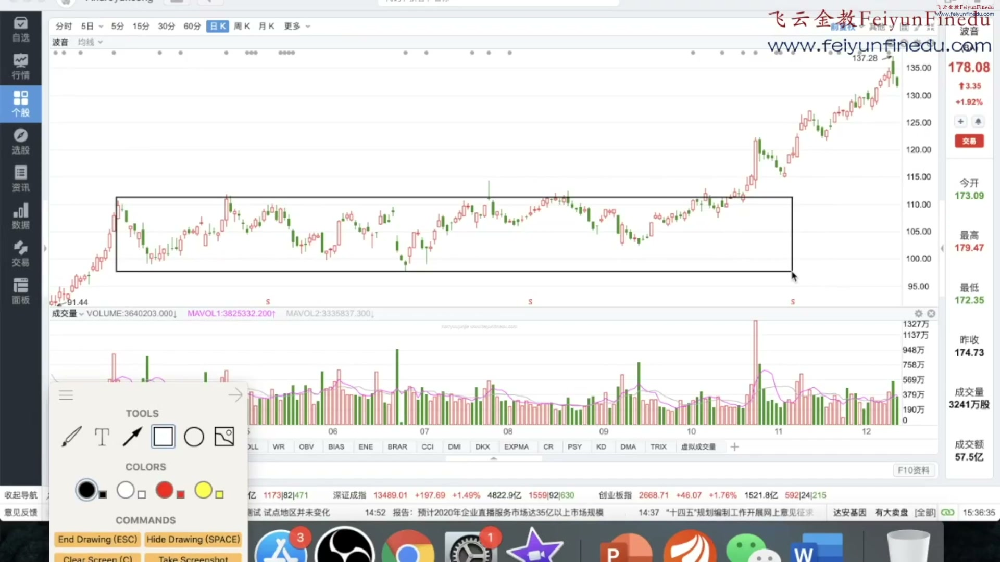
你就会赚很多钱啊 这就是比如说我们 那个日本股神也是 他经常在这种点位做 错了之后就砍掉 对了多留一留 啊这中国的股票 我们再来找一下 美国市场的一些股票 好我们举个例子啊 这是一个美国的股票 很早它有一个吸筹区 大家看是不是特别明显的吸筹区啊 这么大的吸筹区 这个点我应该往上再放一下 等一下 在这儿比较好一点 好我们来看一只美国的股票 这一只股票 它就是也是在一个吸筹区 吸筹区完毕之后 它哪一天跳跃小息呢 这一天跳上去了 彻底跳上去了 跳跃小息 我们的第一买点 跳完之后 它不是一个回抽吗 回抽完了 确认就是我们的第二买点 在这儿 买点完了之后 在这个地方 是不是一个N字吗 这个N字在哪突破的 在这一天突破的就是我们的第三买点
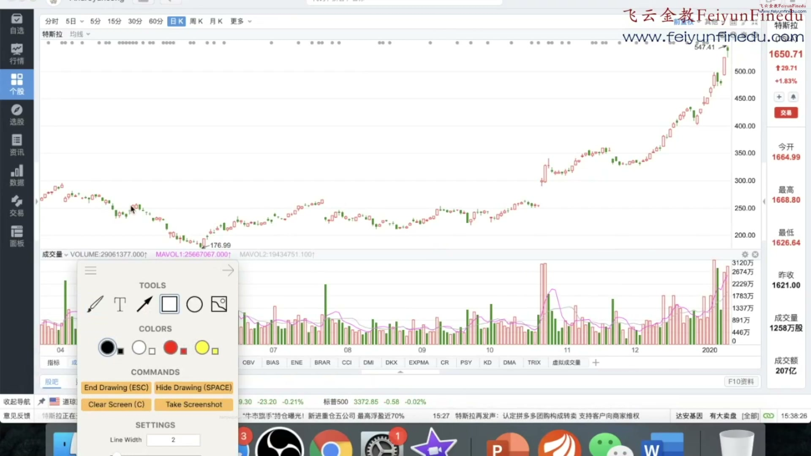
它又跌回来了又上去 特别是那种走锯齿状的 就是经常这样跌了上去 那么我们就找第四买点 第四买点就是我们所谓的什么 支撑压力呼唤 那等会我们再介绍 总之这种就是突破后的三连 一 二 三 大家注意就行了 第三就稍微有点危险了 但是第一或第二都是非常安全的BCD 好这一只大牛股 我们看一下前期 它是不是这个区间 是它的一个吸筹区 吸筹区是以跳空高开的方式 跳跃小息 跳完它有没有回处到这个位置 没有回处到这个位置 它就直接走了N字突破 所以我们在这个N字突破的这个位置 还是要去买 买了之后在这设止损 止损没过又上去 上去之后 我们第二次突破的时候 再继续加仓买 但是后面就一波都上去了
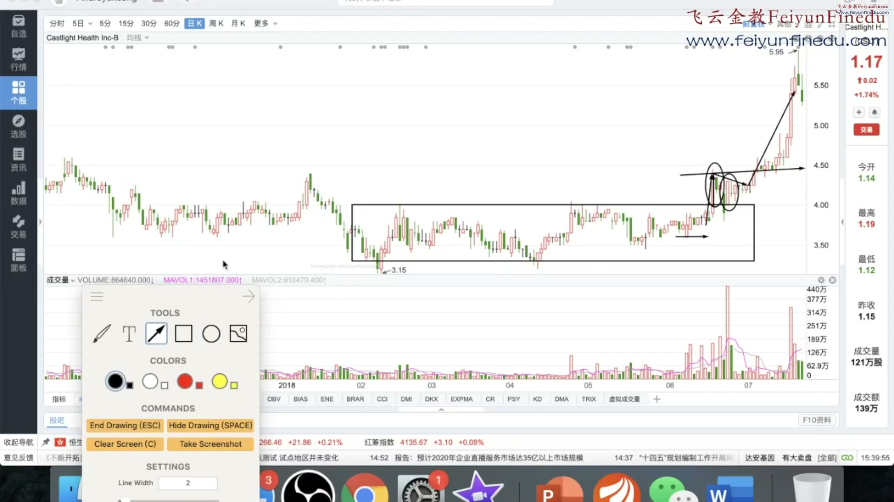
有的时候它甚至直接就上去了 好我们再来看这一只美股 这一只美股 它在这个阶段是一个明显的一个吸筹区 是不是 吸筹完了 跳一小戏这跳的 但是一跳就被打回来 跳一小戏一个买点之顺放在这 打回来不着急 打回来在哪确认的 在这确认的 是不是 那么第二买点确认完了 之后上去回抽 再往上这个点 N字再突破的时候 就是我们的第三买点 所以这是我们的什么 123 好这是我们的股票 我们再来看看 在外汇和比特币里面 我们有没有这种情况 大家可以看到 这个是外汇美元对日元的 60分钟的一波走势 60分钟的走势 它在这个区间 我们看成它是一波吸筹区间
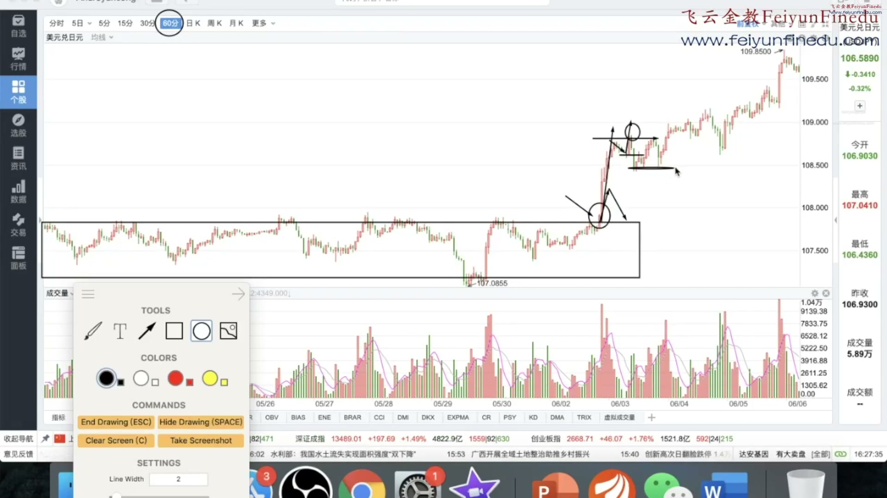
所以你当时在这个位置 关键位置进行买入的话 那么后面这一波上去了 他你看上去就并没有直接回筹 是不是 他就直接上去了 上去之后 我们这边一个小回筹再上去 如果你在这买 那么你这对方应该是一个加仓点 是不是 加仓完了回去 因为他没有一个次地点 你不好受止损 要么你就砍掉他这个M头跌破 要么你等到这个位置次跌点走出来 你在他这边设止损 然后一直等到再次突破 你再次进再次进止损设在这 再次突破你又再次进去止损设在这 那么这是一波一波的这样做 最后我们就一直等到他趋势线被跌破 这个时候你把这一笔交易你再算完成 好我们再看这个英镑兑美元60分钟 前面这一个区间
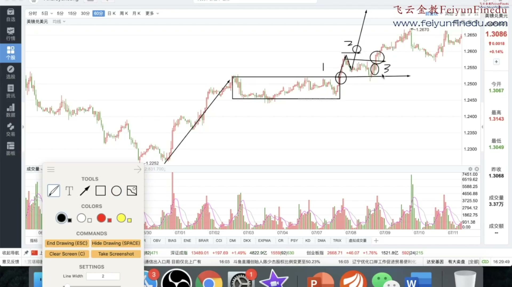
买入之后等到它回调 它什么时候回调 回调得到确认 这里回调得到确认 那么什么时候又来一个N字突破 它这个时候实际上不是N字突破了 这个地方是个形态突破 就是这一波 它如果是N字突破 它应该在这里突破了 这个地方你看 这个地方是N字突破 它没有N字突破 走了一个形态突破 也无所谓 总之我们就知道 这是第一买点 如果有N字突破 第二买点 如果有形态突破 这是第三买点 大概是这么一个情况 好我们就看看比特币 好我们现在看看数字货币 数字货币它也是这样子的 大家可以看到 当然就是说数字货币 因为它波动性比较强 很多时候你看上下插针 这种情况你会亏损很多次 但是只要有一次做对了 你看这个样子 我们在这儿 我们如果把它看成一个 很大的一个区间 这个很明显是个三角形 是不是 在三角形往上突破的这一瞬间
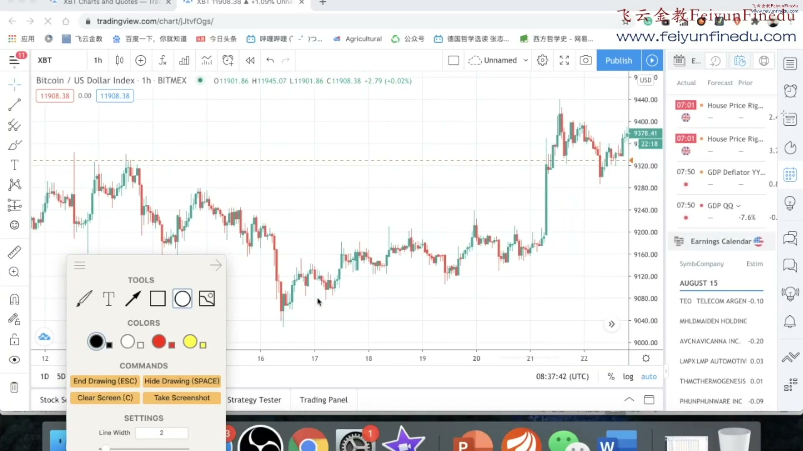
那比如说这个地方是不是回调了 那么你的这个回调 再进行一笔买入 等于这是你的第一买入点 这个回调这个点 是你第二买入点 是在这个位置 那么这样子 我们就一路看 你看后面 它就一波就上去了 上去之后 它又下来 下来之后 你在这个地方砍掉 砍掉之后 我们看有没有获得支撑 获得支撑之后继续买入 这个地方是不是获得支撑呢 获得支撑 那么我们看 这是第一个位置 这是第二个位置 你上去之后 回调买入被砍掉 然后这个地方又来 获得支撑又来买入 你这样子又来买入之后 它如果上面再突破 是不是N字突破 再我们看 N字突破又买入 如果你遇到这样子一波大行情 你可以看到 你看只要你用这种方法 遇到一波大行情 你就会赚得非常非常多 大家可以看到每一波 你看每一波一直到最后
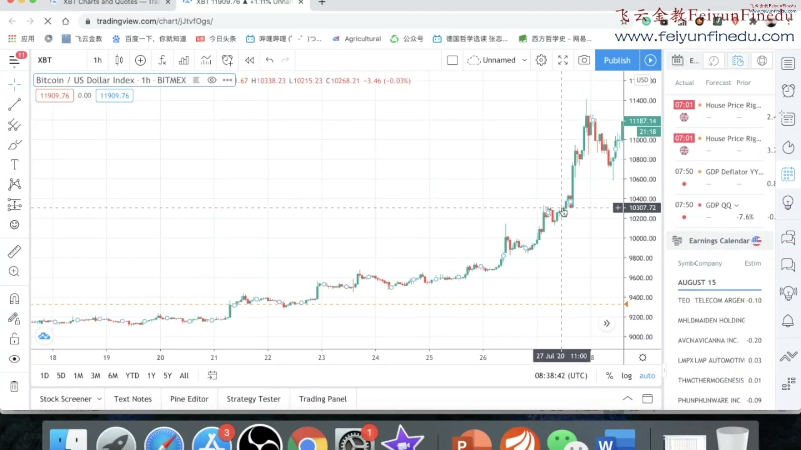
看后面这一波行情就相当的大 最后你一直到这个位置 你把它拼出来啊 你就做了一个非常成功的交易 买入啊 再次买入啊 每这个地方跳跃小息就买入 消息小息回调又买入啊 就是这就是这就是一波一波的这样子一个行情 只要你做对了一次 那么你就远远可以把你前面的小亏都把它打出来 好这个数字货币的方法也是一样的 数字货币和外汇一样 它的波动比较剧烈 我们举个例子 比如这个点 那么如果你认为 它往上突破还可以做的话 突破完你要止损 它就下来了 是不是 然后一直到比如这个点 那么它是不是又是一个突破呢 是啊 那么这个地方 是我们后面的买入形式 叫多周期公正 形态突破 但是你突破 你就随时准备 它可能会有假图 上去之后又下来 所以你随时要记着止损 如果不能自动止损的话 我建议这种票大家不要做
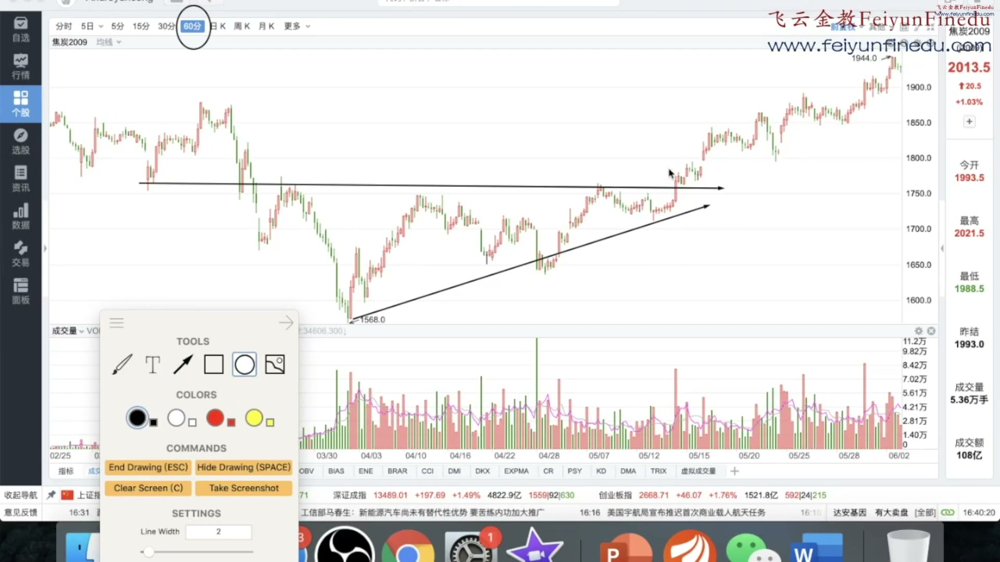
你看这打害得多惨 好这就是我们的数字货币 也是一样的方法 好我们来快速看看商品期货 商品期货我们随便找一个 比如说大家可以看到 比如说这个60分钟的交叹 60分钟的交叹 我们现在看的是60分钟的级别的行情 60分钟 60分钟的交叹 我们把这个区间 大的这个三角形的这个形态区间 它的一个突破 跳跃小戏在这跳的 跳完是不是 上去跳完就可以回抽 回抽完第二买点在哪 在这是不是 第二买点第三买点在哪 好就是分别的 跳跃小戏在一 跳完回抽在二 N字突破在三 然后呢 这一波你看 它就在上去了 一直到最后 跌破这个位置 我们再出来 是不是 你123三个买点 好我们再看看其他的品种
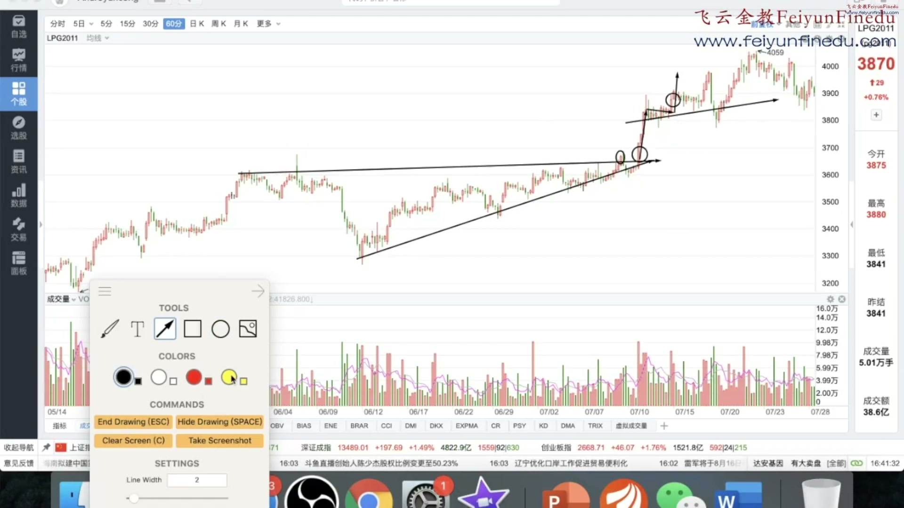
之上好 这个第一个 当时实际上第一次突破在这啊 突破完打回去打回去吧 你要么就先直层出来看看 第二次突破勇敢的进 进了之后你看根本就没有回撤 没有回撤 他直接走N字啊 N字突破再次进啊 根本不要管他再次进 进了之后你就把你的止损设在你这个点位之下 他这个止损打下去 那你就出来啊 是吧 就这样子一轮一轮的这样做啊 好 这就是我们说的跳跃小西 跳完回调 以及N字突破的一些做法 当然N字突破是最 N字突破风险是最大的啊 大家一定要注意 因为有些时候特别是这种走楼梯啊 他就突破一次回车一次啊 就是这种走楼梯的行情 刚突破又回来 上去刚突破又回来
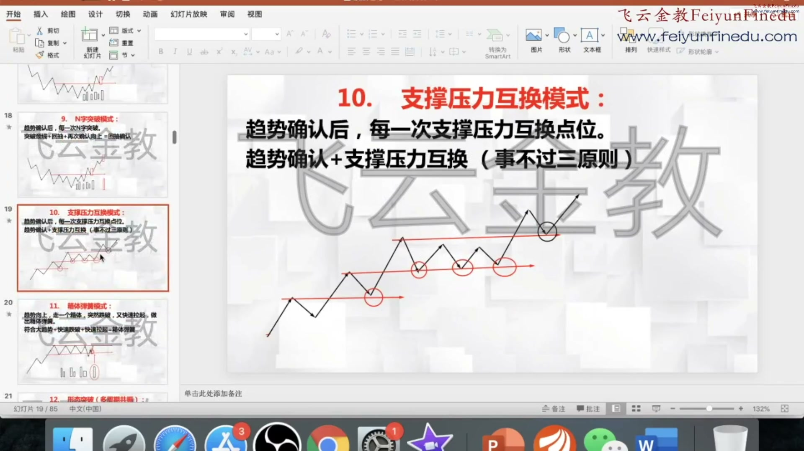
比如这个走楼梯是他日前的走楼梯 那么你到60分钟30分钟突破 那么还是能够做一段的 就是你把周期缩小 大处着眼小处入手 那就解决这个问题 好我们非常感谢 我们本期主要讲了 这个跳跃小息回酬确认 以及N字突破 某支撑压力模式 它其实可以使用各种模式 所以当时我是准备一起讲 但是我们下一期专门讲 支撑压力模式 它可以使用各种各样的模式 像PressAction 他们其他的价格行为学 就是完完全全以支撑压力 它作为一个参考基础的 好我们下期再见 亲爱的会员朋友大家好 我们现在来开始讲 后面的几个模式 第十就是支撑压力互换模式 一旦一个趋势确认之后
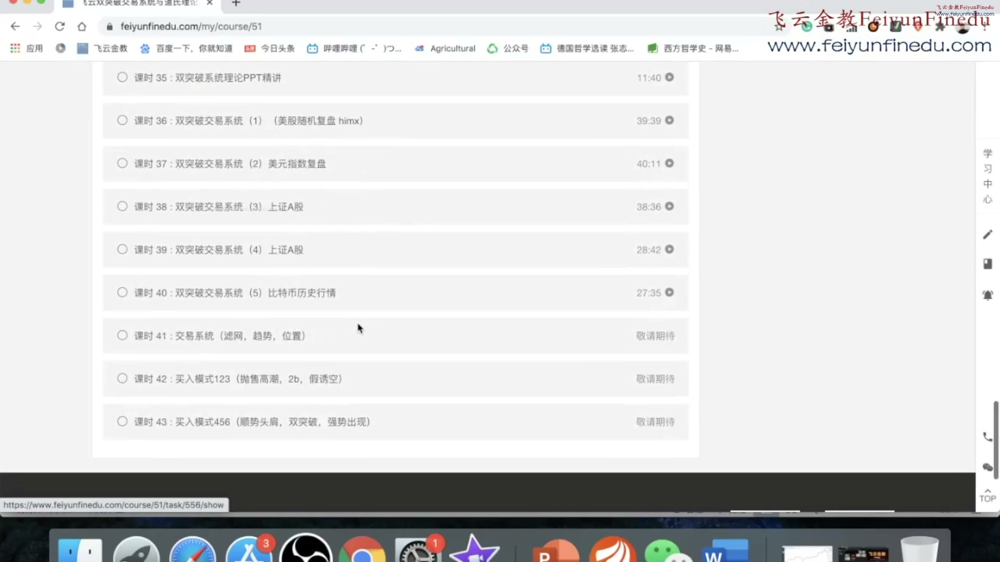
好这个地方呢 我们到时候讲一个 有个叫试不过三原则 等会再详细给大家讲 好我们来看一下前面 因为支撑压力 你看我们的这个双突破系统 到使用双突破系统 我们讲的特别详细 因为支撑压力太重要了 你看我们从19开始 19 21 23 4 5 6 一直在讲支撑压力 是不是 后面我们又用我们的黑白板 还跟大家讲了一些 所以支撑压力我就不是再详细讲了 大家如果再去看我们的总结 总之支撑压力非常非常重要 可以说是核心的核心 如何正确的找到支撑压力 除了点位之外 还有量能累积 还有一些切线 还有一些趋势线 以及它的切线之间的交叉点 这些东西我们都有一些描述 我们就不方便详细讲了
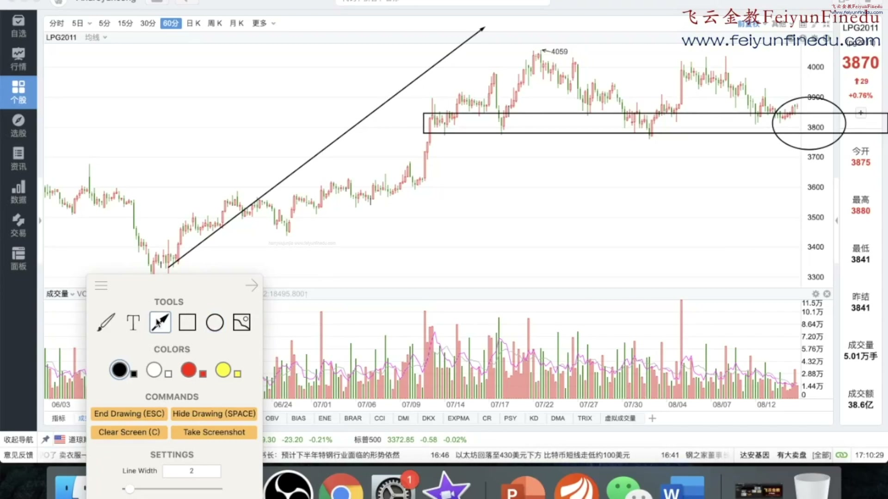
我们看看找一个近期的 好我们举个这个例子 我们举个这个例子 那大家可以看到 这个我们现在天然气 这个位置 那么它的趋势是不是向上的 是的 那么我们只能做什么 只能做多 前面的支撑压力的位置在哪 在这 这是很明显的一个支撑压力区域 那么现在我们要做多的话 到了这个区域是不是做多呢 好那么就疑问就来了 你是到了这个点位一到打下来 马上做多呢 还是看到信号在做多 好我写一下 请大家想一想 这个问题是 比如到了个点 只要是3850 那你又啪去买入 还是说看到信号 好根据我们费用这时间的交易经验 我建议大家一定要看到信号 为什么呢 因为很有可能这个点位到了 他有大单砸下来
走的好好的突破 直接就让它下来了 你要在这一买 一下子打掉之后 你可能马上情绪失控 加仓加仓加仓 越加越亏 是不是 所以我们建议看到信号才做 但是你想如果你看到信号 日线你要有一个双突破 哇那你要等到哪一天去了 哪一辈子去了是吧 有可能压根没有双突破 它直接上去了怎么办 所以解决这个问题的最好方案 就是信号我们把这个周期缩小 我们现在看到不是60分钟吗 我们假设不是日线是60分钟 那么我们就在5分钟去找信号 好我们看看我们来5分钟找信号 或者甚至1分钟找信号 大家可以看到 那么60分钟我们是看不到交易信号的 但是5分钟有没有看到交易信号呢 那么5分钟交易信号就出来了 你看五分钟是不是
这样子我们就完美的解决这个问题 到了支撑压力区 我们到底是在点位上做 还是看着形态做 我们等于说是把周期再缩小 缩到五分钟这里面去 好 这是我们的一个做法 我再给大家讲一讲 就是事不过三的原则 这个完全是一个经验 这个完全是一个经验 我们看到其他的人也有类似的总结 或者是说一些其他的高手 只不过我们就把它明明确确的给大家总结出来 叫事不过三 当然后面可能也不止就是一定是三 也有可能是四五的什么的 什么意思呢 就是说当这个一波上涨回调 这第一波它往往它会有一个翻转 又回到这个位置 第二波再回到这个位置 好 如果它还回到这个位置 大家一定要小心 除非有明确的信号向上
它要是很强 它怎么可能四次回到这个位置 那么它强的话 它应该像这个样子 它的三角形应该是这个样子 上去 应该是这个样子 应该是直角三角形 什么意思 我打下来 我又上去了 打下来 我又上去了 打下来 我又上去了 他反反复复 会碰前面新高 新高处有压力回来 新高处有压力回来 这明他强吗 这明他每次都很容易 到了新高 你这种 是每次很容易 到了前面的低点 这明他弱吧 除非有一种可能 就是机构专门为了洗盘 打到这个位置 就是故意洗盘的 在拉伸 但是这个只是一个猜测 那么你看到他弱 你还是弱嘛 是吧 所以这种东西 你就越到后面 你越要警惕 千万不要没有信号去做
你一买 啪啪啪你点 反正你这么想 它每次到下面 都有机构买入 那么干你说 它应该逐步低点上提呀 它如果没有逐步低点上提 那么这个是一个 不好的一个事情啊 请大家一定要注意 和大家想的反的 大家很多想 哇这个低点买入多好啊 我这买还高了 完全相反 这买高了 但是人家趋势在这低 人家趋势还没有明确 好 这是我们的刚才说的 支撑压力确认 以及事不过三原则 我们再看看支撑压力确认 你看我们随便再举两个例子 大家看这一波的这个菜油的上涨 每次你去看关键的高点 你看是不是 只要是支撑压力上去 支撑压力互换的位置 得到支撑又一波上去了
它又上去了 上去了之后 大家看每一波都是完美的在支撑压力位置 你看完美的支撑压力位置 每一次 突破回调 突破回调 突破回调 突破回调 每一次都在完美的支撑压力这个位置上去 然后到后面怎么加速 你看加速加速 基本上看不到支撑压力 又到前面这种位置 又有支撑压力 你看支撑压力 只要到支撑压力的点 它都会有一个回调确认 回调确认 一直到支撑压力被跌破 它又有一个调整 调整完了 一旦回到支撑压力之上 大家看它又上去了 所以支撑压力是一个非常好的一个现象 一个非常简单的一种交易方法 只要你看把这个支撑压力 你反复去划线 你用好了 我说实话
你每次不要去主观的想象它 至少说你就能够抓住这波行情 你不要怕高 也不要怕低 而且只要是趋势向上 就绝对绝对绝对不能去反着做 当然我们学了飞云这套系统 就永远不会再反着做了 我们灌输了那么多的顺势的概念 我们觉得只要是你这么做 那么你基本上就会盈利的 好我们再来看看股票 我们再来举一个 护身市场里面的股票例子 好我们来看这个股票 这个股票它完成了吸筹之后 跳跃小息 跳跃小息 同样也在前面的支撑压力互换的位置 支撑压力互换的位置 跳下来又上去在这 支撑压力互换的位置 获得支撑上去 上去之后大家又看 又是一个非常明显的支撑压力互换的位置
然后这后面来这一波 你看拉伸拉伸拉伸拉伸 拉的太太太恐怖了是吧 但是如果你把这个支撑压力一划 你看基本上每次都是 有些时候到不了到这儿 稍微上上去了 又在这儿根本不回来 在这儿这个支撑压力只到只要一突破 把这个支撑一突破 突破支撑 你看上面再回抽 回抽在上面再得到确认 然后一波回上去了 而且关键是在这一波一波得到确认之后 但发现没有到最后一来的加速 因为市场已经到了一个 就是大家都都都发疯的想买这个股票 然后呢那些那些赚了钱的人就一直不走啊 不走于是他这个股票的股价就不停的一直就上去了啊 一直到最后真正的大资金愿意撤离的时候 他才走啊
他股票后面根本就没有什么力量了 你看是不是 一旦破掉了后面就没有力量了啊 所以呢支撑压力是非常非常有效的啊 你看这些这些压力位 他一旦啊一旦没有用 他一旦没有上去 他如果上去了你又可以继续买 他一旦没有上去下去 不知道下到哪了啊 所以这是关键的一些位置 他每一个股票都是这样子 我们随便找都是到处都是支撑压力 你看随便一点一指啊 这个支撑上去之后 他以前的压力变成支撑再回调 在支撑压力确认之后就一波波就上去了啊 所以这些大家只要去划线去支撑都能够非常明确的啊 所以支撑压力啊 他每一次只要是趋势在那儿 每一次支撑压力确认的时候就是一个买点 好我们看第十一相体弹簧 箱体弹簧呢 就是它是趋势向上的 它走一个箱体 突然跌破又快速拉起
其实箱体弹簧也有一点像头肩 你看左肩头部右肩是不是 所以我们的箱体弹簧 实际上就有一点头肩 只不过头肩不是要突破颈线吗 那它箱体弹簧可能没有颈线呢 你要等颈线可能等到这儿去了是吧 所以说箱体弹簧就解决了 我们说颈线不好画的问题啊 它只要是符合大势 快速跌破又快速拉起 它就可以成为箱体弹簧 好我们找一找 我们找一找哪一种箱体弹簧 好我们比如说这个股票 这个股票我们看 它的日线 如果把这个位置 我们看成一个箱体运动的话 大家可以看到 它是快速打了 又快速拉回来了 是不是 那么这个拉回来之后就上去了 那么这个地方 我们就可以把它看成一个箱体弹簧 它只要回到这个区间 就是我们一个买入点 这是日线级别的 好我们要看一个股票 我们放大一点
你看两次 啪的打下去 马上拉起来 这个地方更是打下去 马上拉起来 那么它只要是突跌破这个箱体 又快速拉回去 那么我们就认为 这个地方是一个箱体 好这就是一个相体弹簧的概念 相体弹簧如果你遇到了 它也是一个比较好的信号 好再找一个相体弹簧的案例 每次是最好是顺势的 他这个就没有顺势了啊 他这个还是不明显趋势 但是他有一个非常明显的弹簧 你看收了一个巨 收了一个大的一个十字形啊 而且是特别大的十字形 这个收完还并不表示他会反弹 但是一旦他的这儿有一个阳线 那么就表示会反弹了啊 好这也是一个相提弹簧 好股票们看完了 我们看看其他的像期货啊 还有股指啊 里面有没有相提弹簧 好大家看这个期货品种
打了之后又快速拉起来 后来又来了一次快速往下打 打了之后又快速拉起来 但是这一根K线 其实我是一般的不会做的 我要等到这一根来 这一根来才表示它明确了 是不是 它这个箱体弹簧还可以配合我们的 你看配合我们的双突破 是不是 在更小周期内 那么你就更保险了 好 这是我们的相体弹簧 我们最后再来看 第十二 形态突破 形态突破这个就基本上就不用多说了 大家都知道啊 就是有些时候它是一个相体 有些时候它是一个三角形 有些时候它是个菱形 只要是它突破它就可以做 当然这个时候我们就做一个多周期共振 这多周期共振呢 就是说这个时候的是什么60分钟 5分钟30分钟一小时 全是多 我看多 这个时候多周期共振 往往就会有一个加速
是不是一个形态 形态突破 但是它是不是多周期公正呢 你看整个趋势是不是向上的 整个趋势还行 所以它后面就有一波上升 那这个地方是不是多周期公正呢 就不是了嘛 你看为什么 它的这个整个的趋势下降的 是不是 它只有整个趋势上升的 就会形成多周期共振 那比如这个地方 就会形成多周期共振 为什么 它一直在涨 那么你看这种60分钟 5分钟 还有像1分钟 它就可以全部形成一个多周期共振 就是所有的都是向上的 如果你看均线 它们所有的均线都是多头排列 都是多头排列 那这种情况下 它就叫多周期共振 这个很简单 这个大家应该没有什么可多说的 好我们来说一个最后一个 这个比较特殊
它只是第一次 而且是必须是急跌 因为它有可能会有市场反应 市场情绪各方面 而且是必须急跌 急跌的话它就可能大的反弹 这个就是一般的很罕见 但是我给大家举个例子 大家马上就明白了 比如说最近的美国的这个股指 就是这样子的呀 这个道琼斯的股指 我们看如果你去看周线 大家看这个周线 其实看月线更明显 看月线更明显 大家看整个的美国是不是一直都是上升的呀 再回调再一直上升 突然第一轮暴跌 而且直接就跌下去 跌到前面的二分之一线左右 那么它就会有一个剧烈的反弹 大家明白了吗 就是刚才我画的 它本来趋势一直上升一直上升 那它突然就直直这样跌跌跌跌跌跌 跌到这儿一般的会有个反弹
所以说只有这种 就是没有任何阻挡的暴跌 它往往会有第一个反弹 好这是我们的这个道琼的这个月线 我们再来看看其他的一些情况 这种情况因为比较少 我们只能将来再举例子 我们举个这比如这个例子吧 这个例子 它是这样子 你看上去一直是上涨 上涨上涨 突然上涨 然后第一轮直接性的暴跌 跌到这一段的二分之一 那你看它是不是 刚跌完在这就反弹了 一直反弹到现在 是不是 如果它不是这样子暴跌 它是这样子慢慢跌 慢慢跌 慢慢跌 那你还要小心 但是它是直接性的暴跌 跌到这 那么你还可以抢一个小反弹 因为你还是一个顺大 逆小的抢个小反弹 这种的日内交易 你们比较多 现在我也不去跟他找了 因为大家都懂我这个意思就行了 我们把个图再拿出来看一下 他这些都是一些交易小技巧
这第二次就已经绝对不能买了 就是第一次 就是第一次的反弹 还可以做一组 第二次就不可以了 好我们最后再来大家看一下 我们今天讲的几个 这是压力互换买入点 然后相提抬黄 形态突破 多多去公正 最后一个趋势几跌 大家看出来没有 我们实际上就把整个的 从一轮暴跌 它先暴跌 先出来个抛售高潮 可以买入 有2B就买2B没有2B 如果我们有假悠空也可以买 如果2B假悠空都没有 那我们就等顺势投间 如果也没有我们就等双突破 双突破也没有你又去找强势出现 或者你错过了 强势出现跳跃小息回抽N字突破 支撑压力互换 箱底弹簧多周期共振几点 这就等于把你整个的这一波行情 从底部到顶部 每一个阶段的买点 都给大家完美的说出来了
如果你要做空 也是有这13个卖空点 只不过呢 他们就是和做多相对 它有一些不同的特点 但是基本上有 就是你把图形反过来看 就是一样的 好这个我们过几期再讲 好我们本周基本上 我们这13个买点 和我们的交易系统就讲完了 希望大家喜欢 也希望大家多学习 多去把基础知识打牢 只要你能够做到顺大利小 只要你能够做到止损 只要你能够有耐心 等待这13个点出来 我们敢确认 你就一定能够慢慢的走向稳定盈利之路 好的非常感谢 我们下期再见